软件工程的来龙去脉：intent→spec→implementation 的 gap、被误读的瀑布模型，与 UML 的野心
原视频：Bilibili · BV1Nyeq6qEt8（时长约 100 分钟） 课程：南京大学《生成式软件工程》（2026）第 05 讲 · Raw 版 整理说明：本书由视频 AI 字幕（
ai-zh，覆盖率 100%、2583 段）经 AI 重构而成：口语转书面语、按内容逻辑重新分章，并修正了转录中的明显识别错误（如type c AI→TypeSafe AI、JEFF/JB→Jev、chal salt→chain of thought、达舍尔/DEXTRA→Dijkstra、I trio e→IEEE、IFL→Eiffel、pick check→QuickCheck、rose/pom→Royce、大圆模型→大语言模型、基摩场/机膜厂→基模厂、恋爱来了→LLM 来了、羽翼→语义、latin space→latent space、button map→bottom-up）。关键时间点均标注 (参考时间)，点击截图卡片可放大查看。
目录
- 开场：正式进入软件工程
- Jev 与 System One：百毫秒级实时决策打开的赛道
- 被压缩的时间轴：从 1956 到 GPT-6
- Noam Brown：模型现在的短板是"品味"
- 数据分布工程：scaling law 的第二个维度
- RSI 飞轮、学术界的黄昏与"斩杀线"
- intent → spec → implementation：软件就是这三者之间的 gap
- MVP：用最少的实现去补齐 gap
- 一个晚上的 AI slop：把打印机和扫描仪抽象成 self-service
- 非标设备的驱动：让 AI 自己 probe 参数
- 软件公司的消亡：app 沦为一个接口
- 下一个实验预告：让 assistant 驱动物理设备
- 1960 年代：硬件贵、码农贵、客户不知道自己要什么
- 1968 年的遐想：Boys' Life 与"未来的学校"
- 软件为什么难：需求是拍脑袋想出来的
- 软件危机：进度、成本、质量一起失控
- Go To Statement Considered Harmful（1968）
- The Humble Programmer（1972）：nicely factored solutions
- 软件工程的诞生：NATO 1968 与 Margaret Hamilton
- The never going to happen can happen：防御性编程的起点
- IEEE 的定义：把个人英雄主义变成 checklist
- Royce 1970：瀑布模型的出处，其实是在批判瀑布模型
- 瀑布为什么会失败：测试是链条上第一个物理事件
- Do it twice 与 pilot system：1970 年版的 MVP
- 用 AI 读一手资料：知识的有损压缩不再必要
- 用今天的实践回读 Royce：TDD、敏捷与 data dependency
- 软件工程变成了什么：为每个阶段创建方法与工具
- 语言的阶梯：从 checklist 到 DSL 再到编程语言
- 学习顺序：bottom-up 还是 product-first
- 质量保障的谱系：QuickCheck、traceability 与"2500 个码农"
- Design by contract：Eiffel 与"编译即证明"的预言
- UML：对齐语义的野心，与它为什么"死了"
- 用 AI 备课：796 页 UML spec 与教育平权的算力问题
- 结语：哪些 intention 必须定死，哪些留白
- 后记 Postscript：本书是如何生成的
1. 开场：正式进入软件工程
(参考时间: 00:00)
上一节课讲了一点版本管理，这一讲正式开始软件工程部分的内容——“所以现在算是真正的软件工程课了”，尽管版本管理本身也属于软件工程。
在进入正题之前，讲者照例先分享最近一周发生的新闻。这一讲的新闻份量很重，因为它们共同指向同一个判断：AI 的进化速度比大多数人以为的还要快，而这正是"为什么还要学软件工程"这个问题必须被重新回答的背景。
2. Jev 与 System One：百毫秒级实时决策打开的赛道
(参考时间: 00:25)
TypeSafe AI 最新发布了一个可以实时玩 DOOM（毁灭战士）的模型，算是基础模型。
📷 Jev：可以实时玩 DOOM 的模型
在 B 站中打开 (00:00:32)
2.1 它可能是什么架构
讲者当场做了一个"盲猜"：它大概是一个 prefill-only 的模型——就像一个只能输出一个 token 的 transformer，也可能是别的架构。它的工作方式是：
- 输入：把 DOOM 的游戏状态序列化成一个 JSON；
- 输出：一个决策 token；
- 延迟：毫秒级到百毫秒级，基本上是"准人类实时"。
这个输出 token 是被专门微调（训练）过的，所以"它不说人话"，但它可以做决策。你可以把它理解成一个介于大语言模型和传统决策树这类极小模型之间的东西：像训练一个神经网络，但是通用的，而且它真的可以干事——你可以看到它真的在玩游戏。
2.2 System One：真正人类意义上的实时决策
这个新闻火了之后，公司给这一类模型起了个名字：System One，宣称是"真正人类意义上的实时决策"。
讲者的评价是：这并不是一个很新的技术，过去如果关注这个赛道，会看到确实也有人试图做这种非常快的模型；但这次火了以后，它正式把这个赛道打开了。
打开这个赛道意味着什么？如果有一个模型可以在 100ms、乐观一点 50ms 甚至更短的时间里做实时决策，你就可以用它来感知周围的环境：
- 为什么人和人沟通、与人和机器沟通，你会感觉到很大的差别？因为 AI 生成的数字人之间有很大的延迟。前两天流传的一个视频里，两个 AI 演员在用英语对话时突然开始说广东话——延迟和失控都很明显。
- 但如果你有一个 100ms、200ms 的小决策模型，你可以让它做决策，然后实时生成脸上的微表情（根据你说的话）。这样你就得到了一个非常有实时性、非常有"人感"的东西。
- 以前的大语言模型在那个延迟下也许有这个能力，但做得不好；今天你就可以得到了：它能打游戏，就可以生成有人感的人，甚至可以哄小朋友睡觉——"婴儿睡不着的难题就彻底解决了"。
所以它开了一个非常非常大的赛道。
3. 被压缩的时间轴：从 1956 到 GPT-6
(参考时间: 03:28)
讲者播放了一段完全由 GPT-6 生成的视频（彩蛋是：不知道是哪位博主直接用 GPT-6 制作的），把 AI 的历史压缩在了一分钟内：
| 时间 | 事件 |
|---|---|
| 1956 / 1958 / 1960 | 感知与规划，机器走出实验室 |
| 1970s–1990s | 人工智能的寒冬 |
| 1997 | 用搜索算法第一次击败人类世界冠军 |
| 2012 | AlexNet，世界开始发生很大变化 |
| 2016 | 讲者"在现场看直播"（AlphaGo） |
| 2017 | 读 PhD 时关注词向量、transformer、BERT |
| 2020 | GPT-3：大家都吃惊"为什么要做一个那么大参数的模型" |
| 2022 | 我们知道为什么需要了 |
| 2023 | 模型可以"看图"了 |
| — | GPT-4o：识别语音、多模态；随后是开源模型、Gemini |
| 2024 | Sora 第一次发布；2024 年 9 月出现 chain-of-thought 的 o1 |
| 现在 | GPT-6 / GPT-6s pro；以及第一个开源的 CoT 推理模型 |
📷 GPT-6 生成的 AI 发展史视频
在 B 站中打开 (00:03:44)
"2017 年那个时候你们是在上高中吗？还是在上初中？都没有。现在已经 2026 年了，这已经是接近 10 年以前的事情了。"
发展的速度真的是始料未及：从 2024 年 9 月到现在这么短的时间里，就发生了这么多事情。视频里还提到 Millennium problem（千禧年难题）"就这么被大力出奇迹给解决了"。
讲者顺带联想：如果我们有一个比较好的、比较大的素材库——比如 YouTube 或哔哩哔哩上的内容你本身可以用工具下载——你就拥有了这个世界上所有东西的入口，那么创造任何东西都会变得很容易。
📷 《硅谷》S1E01 的名场面
在 B 站中打开 (00:06:53)
他还放了美剧《硅谷》（Silicon Valley）S1E01 的一个名场面：几个伙伴要去做一件改变世界的事情——"千百年来我们这种书呆子一直都被欺负，在人工智能时代终于可以出人头地。"
anyway，这个不重要。但可以看到的是：这个世界的发展在加速，速度可能比大家想象的要快。 所以我们要回过头来想一想在就业市场上面临的挑战；但这也同样意味着这个世界上有很多的机遇。你看到今年春晚上那个"没有人敢的"人形机器人，到明年你就能看到一个非常有人感的、能够实时做出非常棒的微表情的机器人——有点可怕。
4. Noam Brown：模型现在的短板是"品味"
(参考时间: 08:05)
最近有一个来自 OpenAI 的 Noam Brown 的访谈。讲者转述了他的判断（"我不知道他泄露了多少"）：现在 AI 模型的短板是"品味"——也就是说，模型对"接下来应该做什么"的直觉做得还不够好。
📷 Noam Brown 的访谈
在 B 站中打开 (00:08:05)
- 模型被训练成了 prompt 的"舔狗"：你说什么，它就盯着那个疯狂地做。
- 同时它也有一点点 reward hacking 的倾向：会用最快、最脏的方式把你要的任务完成。因为对它来说，把任务完成才得到 reward，于是它会不断往这个方向强化。
- 结果就是：它生产的东西从长期主义的角度看，可能是不能令人满意的。这就是"对接下来该做什么的直觉"的缺失——因为强化学习有即时反馈信号，它就会执着地去做立即有反馈的东西。
讲者的反驳是：没有什么根本道理说我们不能用更多的合成数据去告诉模型"你在做这件事情的时候可以想得远一点"——无非就是你做 chain of thought 的时候，头几个 token 决定了你要做什么。
4.1 可验证与不可验证的边界
Brown 还提到了可验证和不可验证的边界：
- 你觉得"品味"可能是一个不可验证的东西，但也许没有那么难；
- 你觉得"数学"是一个可验证的东西，但验证也没有那么容易：就算你把它 formalize 了，auto-formalization 从自然语言描述的问题到形式语言描述的问题之间，仍然有 gap。
讲者举了一个前阵子很有意思的"笑话"：有人声称证明了黎曼猜想（或者是 P≠NP），后来大家发现他那个形式化证明里，问题的定义本身就是一个不存在的东西——几千页的证明，最后相当于证明了"1 = 1"。
5. 数据分布工程：scaling law 的第二个维度
(参考时间: 10:09)
OpenAI 说要 all in on RSI（recursive self-improvement）。回头看，the bitter lesson 到今天就是 the scaling law，而且到今天可能还没有停止。
📷 GPT-6 发布后的判断：数据分布工程
在 B 站中打开 (00:10:26)
讲者说，看到 GPT-6 发布以后，他最大的感受是：OpenAI 摸到了一个门道。这个门道他不知道该怎么称呼，大概可以叫它数据分布工程（data distribution engineering）：
- GPT-6 有非常惊人的空间推理能力：它可以理解一个图片里面的空间关系，从而在画图、在生成模型方面都做得非常好。
- 毫无疑问是因为训练的时候加入了这部分数据：可能基模训练的时候就加了；同时在后训练（强化学习）的时候，也有更多的数据帮助它理解空间、给它反馈——这样做是好、这样做是不好，或者对与错。
5.1 第一个维度：更多的数据 → 更好的基模
以前的 scaling law 是："更大的模型 + 更多的训练数据 → 基模更好"。所以 Anthropic 去买书、去"烧书"（买下纸质书、扫描后销毁）：只要它有了绝版的数据，它就可以比别人更强。
📷 Anthropic 买书、烧书：绝版语料
在 B 站中打开 (00:11:25)
5.2 第二个维度：加一个新领域 → 所有任务都变好
讲者认为他们看到了另一点，而且这一点更可怕：
如果我们有一个已经做得很好的基模，再加一个它没有见过的领域做强化学习，它就会在所有的任务上都做得更好。
为什么？看模型发展的脉络：最早模型完全就是语料（language token，large language model）；先训练语言，再训练数学（数学语言），再到多模态、空间感知。顺序是先语言 → 数学 → 空间关系。
- 如果从零开始训练一个巨型模型，你需要大量的模拟器数据；而模型是一个 reward hacker，它很容易根据模拟器里非常细微的渲染特征（比如角上那个像素点是亮还是不亮）拿到 reward hack 的信号——它不能泛化。
- 但如果基座很大、既会语言又会数学、还会写歌写程序，在这样一个好的基座模型上再做空间感知训练，可能就不需要那么多数据了。
"所以每加一个新的人类领域，它需要的数据不是更多，反而是更少，就能达到泛化的效果。这是一件非常恐怖的事情。"
有意思的对照是：人跟模型是反过来的。人是先学世界模型——婴儿出生后就和世界交互，要训练一两年才会说话，幼儿园时还说不利索；先有世界模型，再训练语言、再训练数学，再（像讲者读 PhD 那样）训练 research taste。而大语言模型是反过来的顺序。但我们看到的是：不管按什么顺序训练，只要有足够多的数据、有 scaling law，这个模型就能训成。当模型成功了，人也成功了。
5.3 飞轮：架构不重要，算法不重要
所以他们可能看到了数据分布工程上的一个飞轮：它只要决定在什么时候、按照什么样的比例注入数据。
- 模型的架构不重要，算法不重要；只要训练不崩掉，只要"训推一致"（不能训练时一套参数、推理时另一套）；
- 只要这些工程性的问题能解决，只要有十倍、一百倍的数据，这个问题就解决了；
- 更好的算法、更好的模型结构可能带来一定程度的提升，但只要飞轮还在、只要有钱，就可以无限地 scale 下去。
6. RSI 飞轮、学术界的黄昏与"斩杀线"
(参考时间: 14:24)
📷 顶会投稿数量创新高，而基模厂已经不 care
在 B 站中打开 (00:14:26)
基模厂这一侧的判断很冷酷：
- 一方面，AI 顶会今年投稿的数量到达了新的巅峰——学术界更多地用 AI slop 来灌水。"同学们都想发论文嘛，你们如果还想保研的话，都一定会想发一篇论文。"
- 另一方面，基模厂已经不 care 这些东西：你在一个小规模上做任何实验，对它来说都没有意义，因为它看到了另外一个维度的 scaling law。而你不在基模厂，没有任何资源做这件事，对数据分布（什么时候加进什么数据）一无所知。
6.1 blog post 就够了：RSI 的闭环
"也许你也不需要写一篇 paper，你只要写一个 blog post。他们的 AI 看到这个 blog post，就可以拿到他们的数据上去试一试。"
他们要做的是构成一个人工智能之上的 RSI（recursive self-improvement）循环，靠这个循环就可以去做任何事——然后飞轮就蹬起来了。
一旦这个闭环被他们探索到、基本上接近收敛，而且在 AI 的帮助下会很快收敛（因为 AI 比任何一个人类都要强），它就可以去发现下一个新领域：
- 讲者不知道下一个领域是什么：情感计算？化学？他听说 Anthropic 要做一个 wet lab 去做生物工程实验；甚至预测老鼠的行为——你就成为了下一个 scale 的领域。
- 在那个领域上建立反馈、优化训练分布，把这个领域以一个插件的形式插进它的基模训练里，飞轮转起来。
- 每次"我要新建一个实验室、投资几十亿美元"，模型能力就往上抬一个台阶——这是一个几乎可预见能有收益的事情。
📷 RSI 闭环：blog post → 数据 → 自我改进
在 B 站中打开 (00:15:14)
6.2 学术体系的对照：随机 idea 与 peer review
而不是像我们现在学术界：随机地想一个 idea，有没有用不知道，然后去发一篇 paper、接受 peer review。
"我觉得这个体系马上就要崩溃了。每个同学都可以想一想：在这个崩溃的体系下，我们还能剩下什么？"
讲者说他也和 AI 聊了一会儿，理出了一些方向，至少这些都可以作为一个小领域来做验证：比如在系统架构上去训练"品味"，让它做出好的系统设计。"可能到这个学期结束的时候，他们突然推出了下一版的模型，把系统设计加进去了。"
于是他常在课上开的那个玩笑——笑话 AI 生成的 slop code："你看它架构多么糟糕，1+1 个需求它就崩溃了"——这些事情可能就永远都不会发生了。
📷 讲者与 AI 一起理出的、还能剩下的小领域
在 B 站中打开 (00:17:05)
6.3 斩杀线：survival of the fittest
不管怎么样，我们还是需要上课。需要上课，是因为你还是要上课——因为你还是不能完全地依赖 AI。
- 人类是一个竞争的社会，和我们所在的环境、和生物的进化很像：survival of the fittest，你是适者生存的。
- 所以这个"斩杀线"毫无疑问是不断向上移动的；每一个人都在想"我最终怎么样才能逃离这个斩杀线"，在最后还没有被斩杀的时候搭上最后一班车。
- 从人类的角度来讲，人类肯定不希望自己消亡。不管是 Anthropic、OpenAI 还是 DeepSeek，它们都希望靠人工智能去推动人类的进步。
- 当然，斩杀一定程度上会使很多人的生活变得没有意义；但我们成为一个更好的人，就可以更好地找到这个意义。"这也是没有办法的事，我们每个人都是这样，包括我。"
7. intent → spec → implementation：软件就是这三者之间的 gap
(参考时间: 18:33)
回到技术内容。上一次讲了版本管理；讲者花了好几次课来说明软件所面临的问题：
📷 intent、specification、implementation 三者之间的 gap
在 B 站中打开 (00:18:41)
- intent：你想要什么；
- specification：架构、接口、约束；
- implementation：真正跑起来的代码。
这三者之间是有 gap 的。就是因为有这个 gap，构造软件才成为一个世纪性的难题，也才有了软件工程。
上次起了个头：如果你现在就要从零开始构造一个系统，那就需要管理软件，所以讲了一些版本控制的东西。接下来就是——如果我们真的想要构造软件，而且版本管理也有了，那我们到底应该怎么构造？
8. MVP：用最少的实现去补齐 gap
(参考时间: 19:00)
今天的答案是：直接做一个 Minimum Viable Product（MVP），一个最小原型。
📷 MVP：最小可行产品
在 B 站中打开 (00:19:22)
这件事对大家来说是非常直观的：
- 做得多就错得多，做得少就错得少。 所以我做一个最少的、但又和最终 product 最接近的东西，收益应该是比较大的。
- 因为它可以帮助我补上 intent → specification → implementation 的这个 gap：
- 我做一个 MVP，首先是 AI 生成的 slop，所以它也不怎么花钱，这个 iteration 我随时可以扔掉——这不重要；
- 但它能够帮我知道我的 intent 哪里没有弄对、我的 specification（比如架构）还有没有可以改进的空间；
- 然后再做几个版本的迭代，最后再去把它做出来。
9. 一个晚上的 AI slop：把打印机和扫描仪抽象成 self-service
(参考时间: 20:04)
"比如说我那天晚上做了这样的一个东西。所有东西都是 AI slop：我就是开着豆包输入法，然后开了几个终端，来回骂过来、骂我一圈。"
📷 自制的 self-service 终端：扫码即走
在 B 站中打开 (00:20:26)
这是一个和物理世界有交互的东西：他有一个标签打印机，它就把标签打出来了。之前买的各种各样的设备，大家都要用设备自带的那个软件去使用，而"那个软件用起来就像吃屎一样"。所以干脆就不要这些软件了——把所有的厂商软件都屏蔽掉（当然这也是 AI 做的）。
"哎，sorry——这其实是有一些软件工程智慧的。"
9.1 这就是一堂操作系统课
📷 计算机、总线，和挂在上面的各种设备
在 B 站中打开 (00:21:02)
我们有一台计算机，计算机的总线上连了一些设备：扫描仪、打印机、各种各样你能想象的东西（"想象任何东西"）。这就是操作系统课的内容——anyway，不重要。重要的是：这个码是可以扫的，整个流程是自动的，你们不需要扫码；打印出来的东西会自动上传到我们自己的主页上。
那我们为什么不能对它做一个抽象？
- 操作系统课说：设备驱动就是把一个设备抽象成
read / write / ioctl的接口； - 那我能不能把它抽象成一个更好用的接口？
# 扫描仪：一个干净的接口
scan(orientation = face_up | face_down,
duplex = single | double,
dpi = 300)
# 打印机：一个干净的接口
print(image)
当我有这个接口以后，我的设计和实现就完全解耦了，我的软件层就可以工作在这个接口层上。"对，这是一个非常典型的软件工程里的设计。" 这样就再也不需要用那些不好用的软件了——这就是一个 self-service。
graph TD
D1["扫描仪<br/>(佳能, 厂商软件难用)"] --> DRV["厂商驱动 / 自带软件<br/>read · write · ioctl"]
D2["热转印标签打印机<br/>(杂牌, 无标准驱动)"] --> DRV
DRV --> API["我定义的干净接口<br/>scan(orientation, duplex, dpi)<br/>print(image)"]
API --> SW["软件层: self-service 流程<br/>扫码 → 打印 → 自动上传主页"]
SW --> UI["前端界面<br/>用嘴输出 (豆包输入法)"]
UI --> U["用户: 一句话即可"]
9.2 你看到的是：AI 出现以后
而且他特意试用的是国产的模型——因为正好那个额度是空的，就把五个小时的额度基本上全部用完了。得到的是一个看起来非常可用的东西，"就跟你在食堂或者宿舍楼下看到的那个机器"一样，达到了某种产品级的效果。
"所以以后，软件公司就面临一个非常彻底的消亡。"
你想：比如标签打印机都会给你一个驱动、给你一个软件，它的开发成本是非常高的；像他的扫描仪是佳能的扫描仪，软件成本也非常高——要开发、要跨平台的驱动，等等等等。但是在今天，这些全通通都不需要了。
10. 非标设备的驱动：让 AI 自己 probe 参数
(参考时间: 23:11)
这里有代码——他直接让 AI 解释一下打印机（和扫描仪）的部分。但实际上：
- 这个照片打印机是个非标的东西："就我不知道它是什么"，相当于是一个杂牌的，叫 easy scan，不是一个特别标准的设备；
- 他就直接告诉 AI："我就想要把这个打印机驱动起来。" AI 一开始也不知道。
📷 AI 反复打标签来 probe 加热深度参数
在 B 站中打开 (00:24:30)
比如这个打印机里面有一个选项：它是热转印的——就是你们看到的那种贴固定资产的标签：一个碳粉带，在有像素的位置加热，把碳粉烫上去。热转印打印机有一个参数，大概是加热的程度（深度），也就是图像的深度。"我们不知道这个参数是什么意思、应该设什么。"
于是 AI 就不停地打标签：
- 先打一张上面有数字的标签，比如"这是第 15 次尝试：15"；
- 然后问讲者："是淡了还是浓了？"——因为它看不到。
"但如果接个摄像头对着它，它就不需要问我了，甚至连我都不需要，它自己一张一张打，就可以完全自动地把这个东西给完成。"
它一开始试图用 LPD/LPR 协议（因为能识别到），后来发现可以直接用 PCL 驱动做 generic 打印，把它当成一个通用的打印机来处理。
10.1 关键在于：我只问它要一个"可验收的结果"
"我就完全没有监管，我只是问他要一个结果——一个可验收的结果。agent 就可以一轮一轮一轮地去把这个事搞定。搞定以后，外边一个前端界面，我就是用嘴输出。"
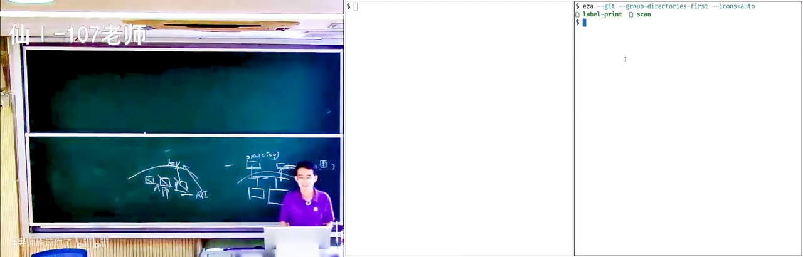
📷 完全定制化的 label print：不要通用
在 B 站中打开 (00:28:12)
最后这个 label print（标签打印）他完全没管，都是 AI 自己生成的：它自己 probe 了打印机的参数和当前插入的标签，完全是定制化的。
"也就是说：我想要什么，以我最舒适的方式来帮我定制，不要通用。因为以后生产软件、生产 intelligence 的成本会非常非常低。"
11. 软件公司的消亡：app 沦为一个接口
(参考时间: 25:20)
所以你看到这个软件会发生根本性的变化。最近也发布了豆包手机，讲者认为它也是一个非常好的工程产品，因为它体现了同样的软件工程智慧：这些 app 都不重要了。
📷 豆包手机：把 app 抽象成接口
在 B 站中打开 (00:25:25)
- 如果我们有一个 Jev 这样的模型——"我觉得 Jev 和豆包手机真的是非常配：一个决策，但又是接近实时的"；
- 所以他觉得它走在前面：它赌模型可以在某一个时间点快到"可以和人一样快点手机"。虽然做豆包手机的时候还不能，但这一天很快就会来。
于是它就把 app 抽象成了各种各样的接口，由 computer use 去调用：
"我要点外卖，它就直接调那个应用——应用就沦为了一个点外卖的接口、一个查询数据的接口。"
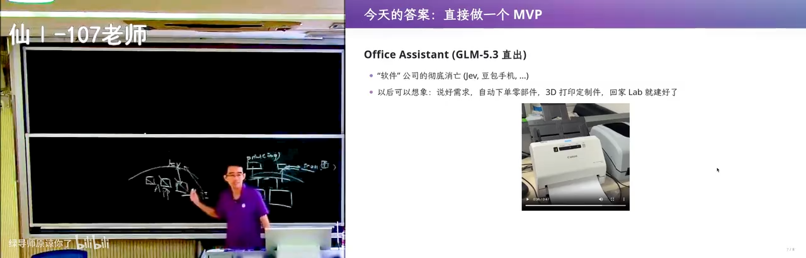
📷 app 给人用，API 给 agent 用
在 B 站中打开 (00:26:28)
所以 app 是不是有一天全部都要死掉？因为它只要提供接口就行了：提供一个 app 是给人用的，但如果只要提供一个 API，就可以给 agent 用。
graph LR
H["人"] --> APP["app<br/>(UI · 交互 · 品牌)"]
AG["agent<br/>(computer use)"] -->|今天: 模拟点击| APP
AG -->|未来: 直接调用| API["API / 接口<br/>点外卖 · 查数据"]
APP -.->|沦为| API
API --> SVC["阿里等在疯狂整合的<br/>旗下所有服务"]
比如阿里在疯狂做这件事：把它旗下所有的服务都向 agent 整合，试图用一个"千问"这样的应用。讲者对千问的评价是有点生不逢时：
- 它太想把这个产品推出了；那个时候模型的算力可能也不够；
- 他们可能自己也没有一个 Jev 这样"智力又足够、而且足够快"的模型来帮你完成各种各样的任务；
- 所以拿出来像一个未来的半成品。但这也意味着，未来总有一天肯定会来。
然后整个软件公司就彻底消亡。你想这个产业链上养活了多少人、多少外包公司。
11.1 一台标签打印机背后的产业链
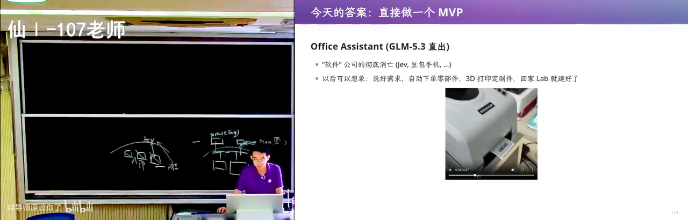
📷 一台标签打印机：硬件好做，软件很贵
在 B 站中打开 (00:27:17)
就以这台标签打印机为例：假设你毕业了要去创业，找到一个细分市场——每个学校、每个单位都需要一个这样的标签打印机，那这是一个不错的市场，你可能卖几百块钱一台，硬件上还是相当有利润可赚的（因为中国供应链很好，这种成熟的硬件你肯定能找到供应链）。
然后你就需要软件。而软件开发成本在 pre-AI 的时代是非常高的：
- 它需要 Windows 的驱动；
- Windows 驱动完了以后，还需要做 Mac 的驱动（因为越来越多的人用 Mac，Mac 没驱动就会抱怨，你的产品可能就卖不了、卖不那么好）；
- 但是到今天，全部都被 AI 杀死了。
12. 下一个实验预告：让 assistant 驱动物理设备
(参考时间: 28:49)
"当然这是未来会发生的事情。你们已经生在这个时代了，就已经生在软件死掉了的时代了。那为什么我们还要讲软件工程呢？因为曾经的软件工程不是这样的。"
讲者预告了下一个实验（当时还没有布置）：把你们第一个实验的那个 assistant 和一个 physical device 联系起来，让它能够驱动任何一个设备：
- 可能是你的手表，也可能是你宿舍里面任何一个已有的东西；
- 也许你会花两百块钱买一个小设备——那个设备也是非标的，可能也没有 Linux 驱动，但你就想把它搞起来。
他自己的例子：办公室里有一个电子墨水屏，靠一个 Android app 烧写，而那个 app 极度难用。
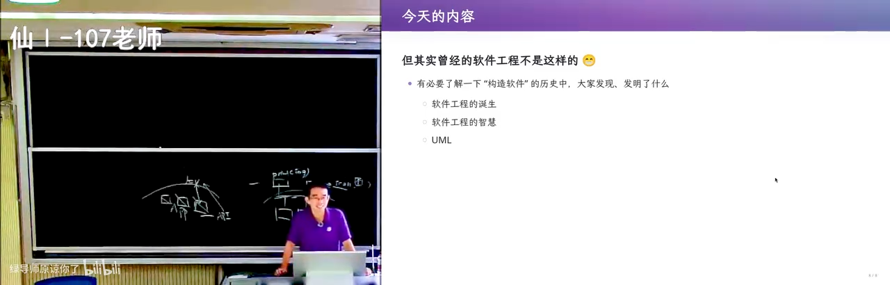
📷 用 Claude 逆向 APK 的蓝牙协议
在 B 站中打开 (00:30:00)
- 当然可以用豆包手机那样的 computer use 方式来用它；
- 但他干了另一件事：用 Claude Opus 4.6 直接把那个 Android app 的 APK 丢进去，让它解包、逆向那个蓝牙的协议（因为它还是个标准蓝牙设备），根据代码搞清楚怎么把内容写到屏上——于是他也得到了一个一样的东西。
"你们可以借助一下现在手头的模型来做这样的事。虽然今天我们已经生在这个时代了，但是软件工程的智慧其实还是没有消失的。"
所以从今天开始，他会讲一讲：你看到的这个世界上这些软件到底是怎么来的、我们在软件构造的历史当中大家发明了什么。用这些理念可以更好地指导你今天和 agent 的协作，成为一个更好的 agent-native 软件开发者。
13. 1960 年代：硬件贵、码农贵、客户不知道自己要什么
(参考时间: 30:47)
首先，软件工程是怎么诞生的？在软件还是一个新事物的年代——比如我们回到 1960 年：
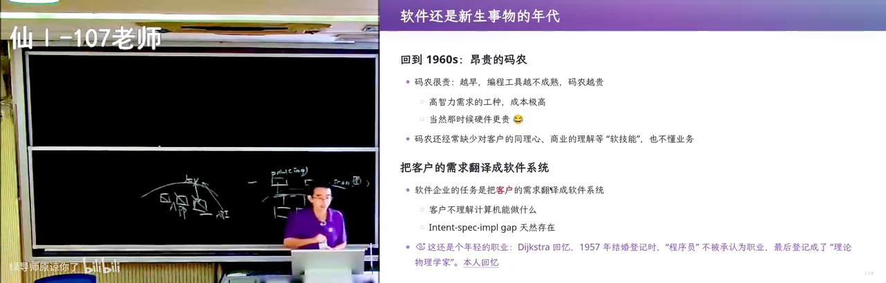
📷 1960 年：一台计算机要占一个很大的房间
在 B 站中打开 (00:31:00)
- 硬件比码农要贵得多。 一台计算机就要占一个很大的房间（虽然不至于一层楼那么高），而且作为最先进的设备，制造成本也很高。
- 那时候大家还不知道怎么造计算机，是不敢偷工减料的——就像你刚开始造建筑的时候都是要猛堆料的，所以成本非常高。
讲者顺手插了一条对照的"最新消息"：iPhone 18 Pro 采用了 QLC 的闪存颗粒。"好像也没有关系，因为 iPhone 的主张是你应该把所有东西都存在 iCloud 上"——所以你的数据坏了，它也就这样，它不会对你的数据负责；可能在保修期内闪存坏了，它就给你换一个主板。但你是应该把重要的数据放到 iCloud 上。（今天的厂商都懂得怎么样偷工减料了。）
13.1 码农为什么也很贵
因为越早的时候，编程的工具越不成熟，码农是一个非常高智力需求的工种——一直到《硅谷》那部电视剧里面都仍然是这样。
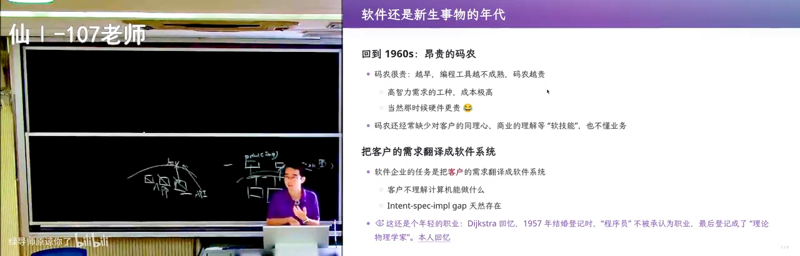
📷 以前写机器代码要画流程图
在 B 站中打开 (00:32:18)
以前写汇编、写机器代码的时候，大家的要求是要画流程图——你们现在肯定不画流程图了。因为那个时候你写的是机器代码：如果不画一个流程图就直接写机器代码，就跟今天让大模型直接写汇编一样。你可以做到让它直接写二进制序列的汇编，但你做不到——它需要过度的预训练才能做到这一点。
13.2 高智商人群缺的那块软技能
不仅码农很贵，而且各位在 985 大学里、被认为是经历了层层筛选的高智商人群，数学训练多了以后，多多少少会缺少对客户的同理心、对商业的理解等这样的软技能。
"我见过很多在各方面都很强的六边形战士。但我的观察是：在理工科专业里面，更多这种 nerdy 的人会多一些——他们可能不 care 业务，他只想要造世界上最好的操作系统（像 Linux 那样的人）。他就不是一个很好的客户经理。"
但软件企业依然需要承担一个职责：把 implementation、spec 和 intent 之间的 gap 给补上。作为一家公司，它需要签订合同——"我希望这 1000 万美元，给你开发一个操作系统"。这个天文数字在今天看：AI 说"给我 50 美元，我也可以给你开发一个操作系统"。
13.3 那时的客户，也不知道计算机能做什么
客户就是软件企业面对的客户。那个时候客户也不知道计算机能做什么：
- 比如 DARPA 的官员；
- 当然那个时候比如 NASA，他们的工程师还会有一些概念——他们要把人类送上月球，或者要在飞机上做一个飞控系统，他们面对的都是这样的需求；
- 但他们的客户可能也不完全知道自己想要什么。
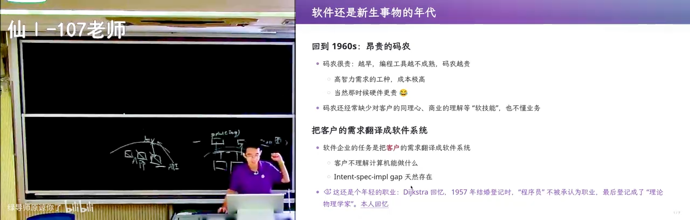
📷 Dijkstra 1957 年登记结婚时的"职业"
在 B 站中打开 (00:34:21)
而且程序员还是一个非常年轻的职业：Dijkstra 在 1957 年登记结婚的时候要登记职业，而"程序员"不被承认为一个职业，最后还登记成了理论物理学家。
14. 1968 年的遐想：Boys' Life 与"未来的学校"
(参考时间: 34:43)
在那个时候，客户已经对计算机或者说软件产生了非常过度的遐想。
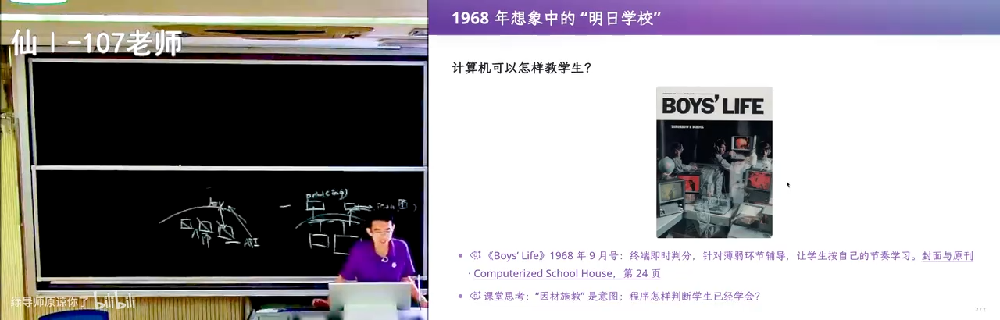
📷 1968 年 Boys' Life 杂志里的"未来学校"
在 B 站中打开 (00:34:45)
这是一张来自 1968 年杂志的图（讲者特意让 AI 找出来的）：Boys' Life 1968 年 9 月号，"未来的学校"——
- 终端及时判分；
- 针对薄弱环节辅导；
- 让学生按自己的节奏学习。
"到今天都没有实现。 你们还在这里上两节课、每节课 50 分钟的这种课程。1968 年的时候，Boys' Life 9 月号就已经唱响了这件事情了。"
所以这个 gap 就越来越大了。那个时候的一个客户，软件公司给他画了个大饼，他说"我要投 1000 万美元做一个什么跨时代的软件系统"，但他脑子里面是这样的东西；而你回到 1968 年的时候，程序员脑子里是什么？脑子里就是汇编，就是 goto。
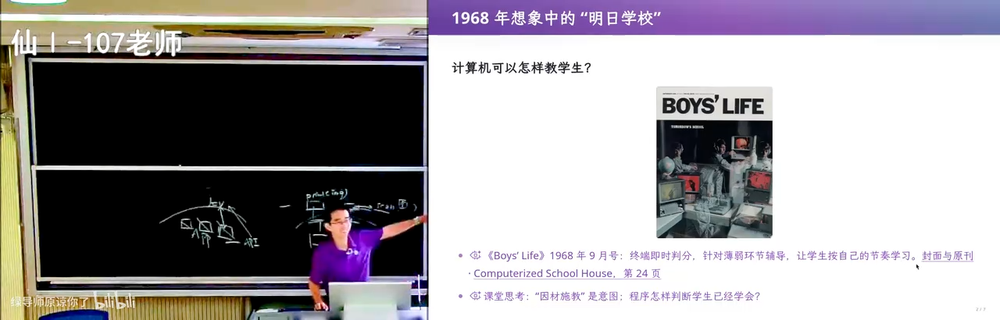
📷 客户脑中的未来 vs 程序员脑中的汇编
在 B 站中打开 (00:36:04)
那这个 gap 就毫无疑问是非常非常大的。
14.1 插话：这份 slides 是怎么来的
讲者顺便解释了他的课件生产方式："我的 slides 是 AI 生成的。"
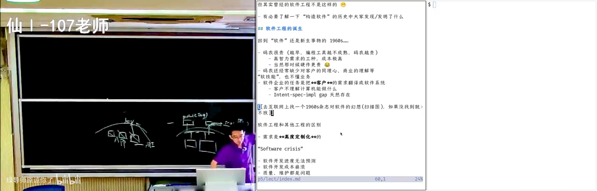
📷 slides 里的两个中括号：讲者亲手写的内容
在 B 站中打开 (00:35:01)
- 他在里面写了两个中括号，中括号里面的话是他教给 AI 的：AI 看到了就会把它 verbatim copy 进去（可能会修复一下他的 typo）；
- 上面那些是他自己写的，其余部分就是 AI 自己发挥——他有一个 make slides 的 skill；
- 于是 AI 自己找到了这张 Boys' Life 的图。
15. 软件为什么难：需求是拍脑袋想出来的
(参考时间: 36:12)
就是因为有这个 gap：我们的软件是要实现物理世界的需求在信息世界里面的投影，这使得软件工程和其他工程（比如桥梁工程、炼钢这样的工程）有很大的区别。
| 桥梁 / 炼钢等传统工程 | 软件工程 | |
|---|---|---|
| 需求来自 | 自然物理世界，只能适应、不能改造 | 人的头脑，"完全是拍脑袋想出来的" |
| 约束 | 材料强度出厂就确定；楼盖几层、容纳多少人、人有多大，都是自然界选择下来已经决定了的 | 高度定制化，连接了物理、社会、人的偏好 |
| 创新方式 | 遵循比较强的模式，做小改进，一代一代迭代；彻底推翻的大改进非常困难，一直是 incremental 的 | 1968 年就能想出"未来的学校"这种东西 |
软件是人类智慧的巅峰——这确实也是一个事实：像操作系统、编译器这些非常难的软件，你去学它都需要多年的专业积累，它很复杂。
而且复杂到——甚至连制定 intent 的人都没有想好各种各样的 corner case 应该怎么样。
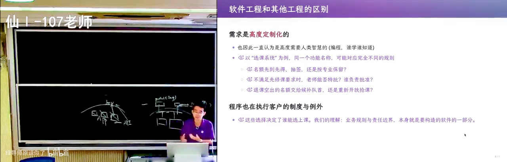
📷 选课系统的 corner case（AI 帮着 YY 出来的）
在 B 站中打开 (00:38:02)
比如他就想做一个选课系统：
- 到底是先到先得、还是抽签、还是按专业保留？（"这都是 AI 给我 YY 出来的"）
- 不满足先修课要求的时候，老师能不能特批？
- 你在做需求的时候，领导跟软件公司说："我们的课程是要有先修课程的。" 那也是知道的——你们在系统里面都能看到：比如你要选修操作系统，你必须要先修计算机系统基础。
- 那就糟糕了：这是一个硬的限制，还是一个软的限制？谁能 override？ 到最后你一秒钟毕不了业的时候，所有的口子学校都能给你开——你最后就差这门课的时候，马上就能选上这门课。那这就是一个例外性的需求。
所以软件的需求是一个高度定制化、非常复杂的东西，连接了物理、社会、人的偏好等等。所以做软件很难。
16. 软件危机：进度、成本、质量一起失控
(参考时间: 38:58)
在那个时候，大家就发现了：进度、成本、质量是一起失控的。
📷 进度、成本、质量一起失控
在 B 站中打开 (00:39:03)
- 开发进度不能预测；
- 软件开发成本崩溃（超支）；
- 而且要延期交付。
那个时候，computer scientist 其实已经观察到了各种各样软件里面有趣的东西。
17. Go To Statement Considered Harmful（1968）
(参考时间: 39:15)
比如 Dijkstra（图灵奖得主）那篇非常有意思的文章：Go To Statement Considered Harmful。
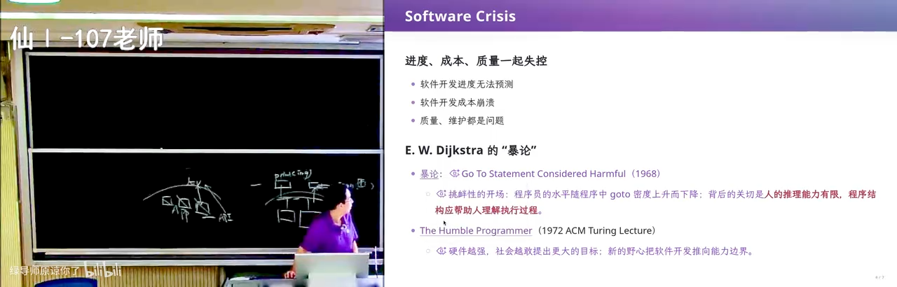
📷 Go To Statement Considered Harmful
在 B 站中打开 (00:39:22)
大家都听说过 goto 是 harmful，但你们同时也看到 Linux 内核里面有好多 goto。这是 C 语言为数不多的、比较 idiomatic 的一个用法：
int do_something(void) {
/* ... 中间随时申请资源 ... */
if (need_more) {
buf = alloc();
if (!buf) goto release; /* 中途想退出，必须 goto release */
}
/* ... */
release: /* 逐个检查并一一释放本函数申请的所有资源 */
free(buf);
close(fd);
return ret;
}
- 在
release处，你会逐个检查你在函数里面申请的所有资源，然后一一释放； - 这样它就可以保证：你在任何时候、在中间要申请一个资源的时候，你都在
release的地方加一个检查和释放； - 你在写代码的时候永远不能在中途退出；想要中途退出的时候必须
goto release——那这个程序基本上就能正确了。
它其实解决了 C 语言里面一个很大的问题：随时申请、从不释放（"你们在做 OJ 的时候留下的坏习惯"）。
17.1 一句"暴论"，和一个不绝对的道理
"他有一个非常……就跟我说的'没有 token 要退学'一样，他先发表一个暴论：程序员的水平随着 goto 的密度上升而下降。"
这背后是有一定道理的，但它不绝对。大量的 goto 会让你的程序变得很难理解，所以他讨论的其实不是 goto 到底 harmful 不 harmful——
- goto 可以不 harmful：如果作为一个正确的机制使用（只允许你这样用），它就不 harmful，它挺好的；
- 他背后考虑的是：希望你能够写出人能读的代码。 只有人能读，它才有可能维护得下去，从而让软件世界能够相对正常一点地运转。
18. The Humble Programmer（1972）：nicely factored solutions
(参考时间: 41:41)
1972 年，Dijkstra 得了图灵奖以后的 Turing Lecture：The Humble Programmer。
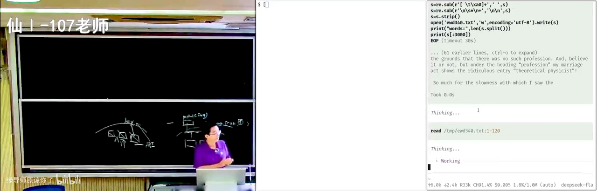
📷 The Humble Programmer（1972 图灵演讲）
在 B 站中打开 (00:42:03)
"我觉得这就很好——现在我们可以直接去 digest 原始的文稿，在 AI 的帮助下直接阅读原始的文稿。"
18.1 为什么会有软件危机
他谈到了为什么会有软件危机：
- 如果你永远写 online judge 的小程序，就不会有软件危机：你就"算一个东西"嘛，算完就完了；你一旦把这个程序调对，就永远不需要去维护它。
- 但是机器变强以后，你的软件的需求是不断膨胀的：机器越强，你承担的现实世界的 intent 越多；intent 越多，不确定性就越多；实现就会变得越复杂。
18.2 nicely factored solutions
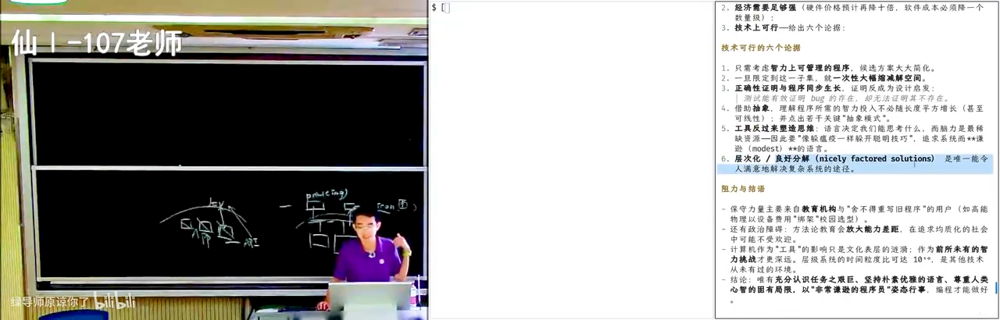
📷 nicely factored solutions：良好的分解
在 B 站中打开 (00:43:05)
他提了一些对软件的思考，比如 nicely factored solutions（良好的分解）：在你构造任何软件系统的时候都在不断地做这件事。
"比如说我就写一个东西帮我驱动我的标签打印机和扫描仪，它也是一个 nicely factored solution。我们无时无刻不在用这样的想法来组织我们的软件。"
他还有一些有意思的观点，比如：保守力量主要来自教育机构与舍不得重写旧程序的用户。
"这都是放到今天依然让你觉得醍醐灌顶的。确实，Dijkstra 那个时候（1972 年）就拿了一个图灵奖。"
19. 软件工程的诞生：NATO 1968 与 Margaret Hamilton
(参考时间: 43:54)
大概就在那个时期，软件工程成为了大家关注的一个焦点，因为软件开始失败了。
- 1968 年有一个 NATO 软件工程会议（你们也可以直接去读原来的 summary）；
- 差不多在那个时候，Hamilton 和她的团队提出了"软件工程"这样的概念。
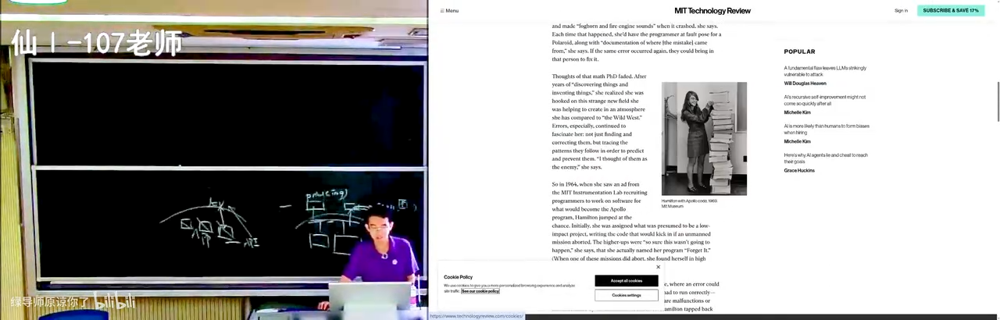
📷 载入史册的照片：Hamilton 与 Apollo 代码（1969）
在 B 站中打开 (00:44:31)
"这是一个非常有标志性的照片，应该是载入史册的"——1969 年，Apollo 的代码：Margaret Hamilton 站在与她等身高的阿波罗导航计算机源码打印稿旁边。旁边那句话是："经过不懈的排查错误，这位最初的软件工程师把宇航员送上了月球。"
"这个代表了软件工程学科的诞生。"
20. The never going to happen can happen：防御性编程的起点
(参考时间: 45:25)
你们看到今天你们都要防御性编程：比如第一节学 SICP 的时候，它就告诉你写软件的时候你要写 assertions、写 specifications。
Hamilton 把一个绝对不能发生的假设都当成可能——一种防御性的、为未来思考的智慧：
她假设这个软件在任何时候、甚至违反假设的情况下，依然要能够工作——她才设计出了一个成功的软件。
📷 The never going to happen can happen
在 B 站中打开 (00:46:28)
The never going to happen can happen.
当我们回头去看原作的时候，你会发现这些思想在今天反而更容易理解，比教科书上经过了一手、二手、三手、四手消化的时候要好得多。
- 你可能要假设硬件也是不可靠的；
- 无论如何都要在软件里面做一个兜底的机制：当你的程序 crash 了以后，整个系统依然要能够工作。
- 其实这就是软件工程的起点。
20.1 阿波罗 11 号：警报响起时，下降仍在继续
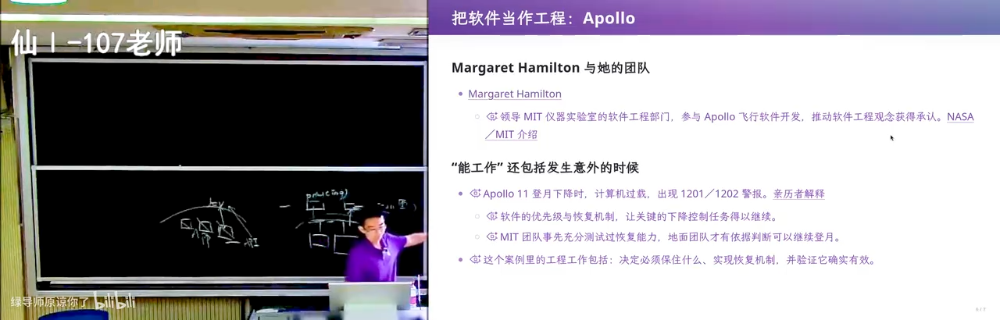
📷 阿波罗 11 号下降时的警报与优先级 recovery
在 B 站中打开 (00:47:17)
所以你看这里有一个"能工作"，还包括发生意外的时候：阿波罗 11 号登月下降的时候发生了警报，但这个软件因为有优先级和 recovery 机制，让关键的下降控制任务得以继续。
"就那个时候还没有软件工程，他们就从 first principle 去思考：如果我们要构造一个真正好的、高质量的软件，我们应该怎么做？它的 first principle 就是 the never going to happen can happen。好，有意思啊——软件工程的（起点）。"
20.2 OJ 的隐藏假设：题目是对的
这有点这个感觉吗？你们做 OJ 的时候，你假设题目是对的——这是一个隐藏的假设：你假设题目是对的、假设题目是能做出来的。这个假设本身就不对：当你反复强化的时候，你就 overfit 了这个假设。
你应该假设的是：你面对的是一个开放的世界——
- 这个题目可能是错的；
- 这个题目的条件随时可能会变化；
- 这个题目甚至可能会变成另外一个题目。
那你怎么做一个软件来解决它？
当然，编程是另一件事：你通过刷 OJ 训练的是你的逻辑思维、算法思维、你的 chain-of-thought 能力，这对设计软件、理解软件是有好处的。
21. IEEE 的定义：把个人英雄主义变成 checklist
(参考时间: 49:04)
所以你看 IEEE 给出的定义（讲者让 AI 现场读了一遍）：
Software engineering is the application of a systematic, disciplined, quantifiable approach to the development, operation, and maintenance of software. ——即"工程化"地对待软件
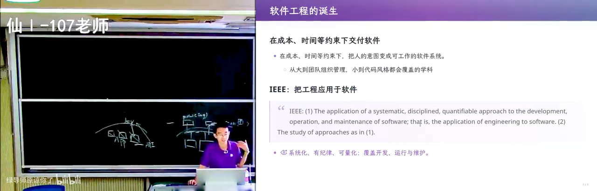
📷 IEEE 对软件工程的定义
在 B 站中打开 (00:49:08)
它把软件变成这样一件事：你不再是一个个人英雄主义者。
- 在 Hamilton 那个时代，项目需要一个很好的 leader——如换一个人，这个项目就失败了；
- 而"工程化"把它变成：你可以拿到一个 checklist。如果这个 checklist 上 1、2、3……10 全部都满足了，那至少——虽然不能保证你的软件成功——但失败的概率会小很多；
- 关键词是：有纪律（disciplined）、可量化（quantifiable）、覆盖软件的整个生命周期（development / operation / maintenance）。
所以在 AI 还没有"大杀四方"的时代，软件工程这个学科——从刚开始的大量失败，或者说从数亿美金的教训（什么"炸一个火箭"这种，很多时候都可能跟软件工程有关系）中——其实积累了很多的智慧：大家看到成功、看到失败，多多少少就会从中总结出一些经验和教训。
21.1 接到任务之后：为什么必须先划分任务
即便回到 pre-AI 时代，大家其实也非常清楚 intent / spec / implementation 这样的 gap：
如果你接到一个开发任务，你肯定不能立即就安排说"哎，大家去干吧"——任何一个 leader 都不应该干这样的事儿。
即便最终的产物一定是码农写出来的，因为：
- 不同的人看到的是不一样的部分；
- 如果这个软件要分工，你的 leader 都需要指派哪一个部分由哪一个人来做。
"就像我做这两个的时候——打印机和扫描仪：那个时候我已经同时接到我的电脑上了，那我就起了两个 agent、开了两个窗口，一个去搞定打印机，一个去搞定扫描仪。这很正常：需要一个划分任务的过程，不能是一个 self-organized。"
22. Royce 1970：瀑布模型的出处，其实是在批判瀑布模型
(参考时间: 51:32)
那如果我们涉及划分任务——也就是说，刚开始我们从一个空的 repo 出发——我们怎么样去做呢？是直接去开发、直接把这一句话交给它做 MVP？
那个时候还没有 MVP。 你想：这是 1970 年的论文，1970 年软件工程刚刚诞生，还没有 minimum viable product，没有大语言模型。那一个思考"怎么按时、不超预算地交付大型软件"的人，就写出了软件工程领域的开山之作：
Winston Royce, Managing the Development of Large Software Systems, 1970.
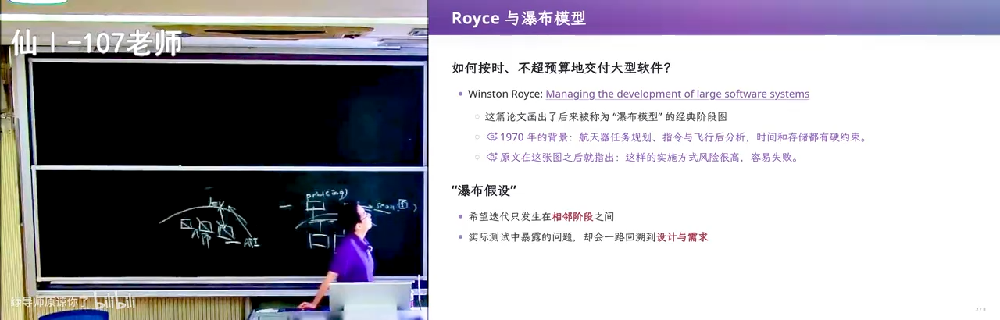
📷 Royce 1970：软件工程领域的开山之作
在 B 站中打开 (00:51:40)
22.1 你们一定见过这张图
讲者现场开了浏览器，用百度搜索"瀑布模型"（"我就不打开秒懂百科了，这个有点搞笑"，然后放大一些）：
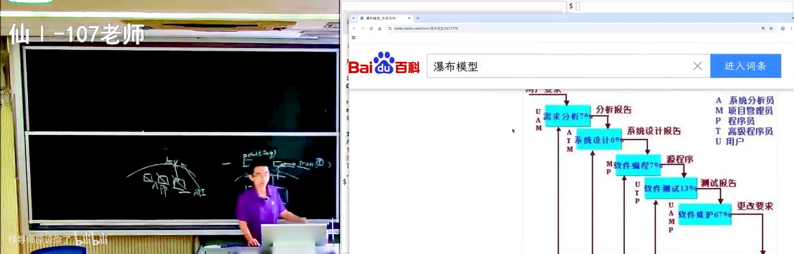
📷 百度搜索"瀑布模型"得到的经典图
在 B 站中打开 (00:52:32)
"你们只要是 computer science 或者 software 相关的，一定在软件工程课上面见过这样的图：一个 waterfall model，从上到下。然后这个图来自哪里呢？这个图就来自 Royce 的这一篇经典文章。"
22.2 讲者的读文章方式：让 agent"入库这个 paper"
顺便，他展示了"我读文章的方式和你们读文章的方式有些不一样"：
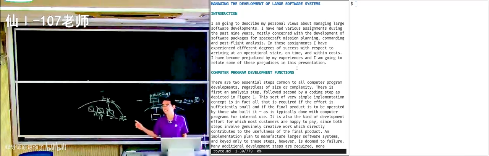
📷 让 agent 入库这篇 paper，得到文字整理版
在 B 站中打开 (00:53:06)
- 昨天备课的时候需要这篇文章，他就直接找到了这篇文章的链接，然后直接和他的 agent 说："入库这个 paper。"
- 于是他得到了一个文字整理版：他的 AI 助手会把所有的图片（Markdown 图片）都直接嵌入进来；
- 他还有一个命令行的工具，可以打印文本、也可以提取图片；还有一个类似 less 的工具——"就我什么也没有说，它就来帮我直接在命令行里面读论文。"
22.3 最有意思的是：这篇文章是在批判瀑布模型
"最有意思的是：我们都讲'学软件工程都学瀑布模型'，可实际上这篇文章是批判瀑布模型的。"
所以你还得去读原文——一个东西经过了很多次消化以后，你得到的可能就不是那个东西了。 因为在 1970 年，大家真的什么也没有，只能从 first principle 去思考。
23. 瀑布为什么会失败：测试是链条上第一个物理事件
(参考时间: 56:15)
如果你看到这，那这就是一个经典的瀑布模型：需求 → 系统需求 → 软件需求 → 分析 → 设计 → 代码 → 测试 → 上线/运维。
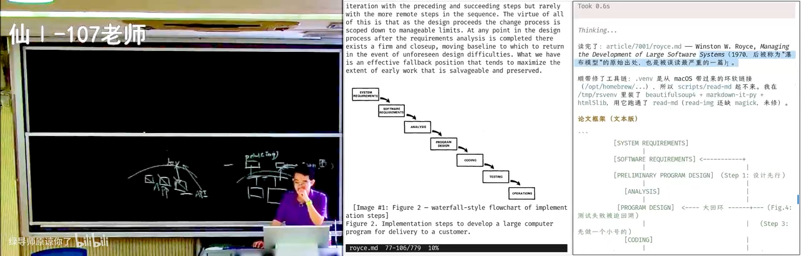
📷 AI 的解读：被误读最严重的一篇
在 B 站中打开 (00:55:30)
讲者让 AI 直接读这篇论文，AI 给出的第一句总结是：
"后被称为瀑布模型的原始出处，也是被误读最严重的一篇。"
所以应该是最早有一两个 article 错误地、没有描述完这篇文章里面的所有观点，然后一级一级传了下去。
AI 还在现代意义上重述了 Royce 的第一步：对于一个足够小、小到一个人就能完整装进脑子里的程序，两步就够了——Step 1：分析并编码；Step 2：测试。
"所以你看，这就是你们的 online judge。你站在今天，你做的所有软件的 practice，依然能够很好地对上这篇文章里面当时他们的一些思考。这个 OK，没问题。但是这个很容易失败。"
23.1 first principle：在测试之前，程序是不能运行的
如果你把这样的一个流程扩展成一个瀑布——他的观点是：
测试是整个链条上第一个"物理事件"。
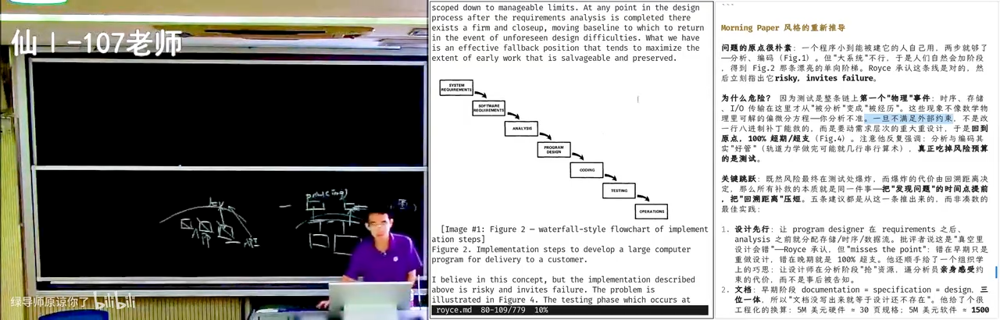
📷 回溯与返工：漂移在测试时才爆炸
在 B 站中打开 (00:57:46)
- 你在设计的时候，你有的只是报告；在 program 真正被写出来之前，它是不能运行的。这是一个 first principle。
- 也就是说：当这些东西还不能运行的时候，你都会随便做做——这就是人。
- 文档嘛，"你叫我写文档，我就写一个"。想想你们写实验文档的时候，你们对它的正确性有 guarantee 吗？ 当然有同学会认真一点，或者说"我有个 best-effort guarantee"，但实际上你是没有 guarantee 的。
- 文档先写了就放在那；然后代码改了、设计改了、文档不一致，也就放在那。
- 所以这些东西不是在一个很强的约束下做出来的。
- 然而只有在你测试的时候，这个程序才真正跑起来，你才真正知道它的行为是什么。 虽然你在编码的时候可能就已经感觉到有一些不对了，但一旦你的 intent → specification → implementation 发生了漂移（drift），你到测试的时候才发现，就意味着你要回头去修改——论文里也有一个图：你要回到前面去修改。
那这个就会带来成本。所以这就是超期或者超支的源头。
graph TD
R["需求<br/>(报告 · 无强约束 · 随便做做)"] --> D["设计<br/>(报告 · 文档不一致也没人管)"]
D --> C["编码<br/>(隐约感觉不对, 但还不能运行)"]
C --> T["测试<br/>★ 链条上第一个物理事件<br/>程序才真正跑起来"]
T --> O["上线 / 运维"]
T -.->|"发现漂移: 回头修改<br/>成本被放大 → 超期 / 超支"| D
T -.->|更糟: 需求本身就错了| R
"你看这些图——如果你真的读过原文，它很好理解；而且站在今天（尤其你有今天的软件工程实践以后）去理解它，其实非常非常舒服。"
24. Do it twice 与 pilot system：1970 年版的 MVP
(参考时间: 58:12)
既然风险最终都在测试的地方爆炸，那所有补救的本质都是：把发现问题的时间点提前。 这是一个非常自然的想法。
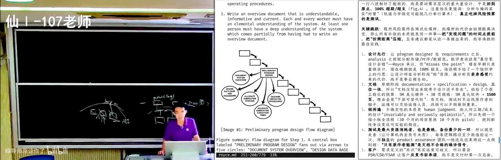
📷 Doing it twice / preliminary pilot program
在 B 站中打开 (00:58:24)
于是 Royce 提出了那篇文章里一个非常非常经典的观点：
设计先行，文档做两遍——Doing it twice。
他的用词是 preliminary pilot program（先做一个预备性的试验系统）：
- 我们先要做一个不完备、但能够体现这个系统功能的设计（pilot）；
- 这个东西可能会失败，但它迭代的成本会变得很低；
- 迭代成本低，它就可以 reflect 到这个系统的设计上。
"然后你看这是什么？这就是 minimum viable product。"
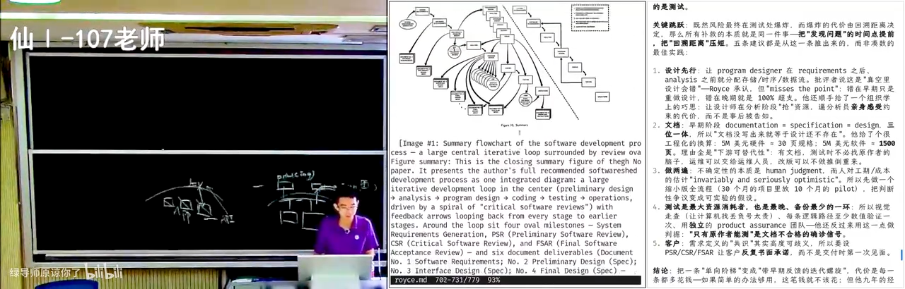
📷 Royce 在论文最后给出的软件开发模型
在 B 站中打开 (00:59:12)
论文的最后是他所设想的一个 software development model。
"就算是在今天这个 vibe coding 的时代，你回去看，它还是提供了很多的软件工程智慧——即便它是在航天器的任务规划、把人送上月球这些背景下写的。"
这篇文章的结构其实是： 他先提出了这个瀑布模型，然后说明了这个瀑布模型在软件工程中是怎么失败的，并且分析了一个具体的失败。
25. 用 AI 读一手资料：知识的有损压缩不再必要
(参考时间: 00:59:44)
而这个流程在今天开发软件时也是完全一样的：因为你总是从空的项目开始——不管你是用什么样的版本控制工具，你都需要经历"先想清楚你要干什么 → 再大概想想我架构应该怎么做 → 再去写代码"。不管这个写代码的是软件工程师还是 AI，这个流程依然是成立的。
25.1 每个人都可以阅读一手的信息
"所以你看到了：在现在 AI 的时代，每个人都可以阅读一手的信息。你可以直接回到这个历史的背景上；而且 AI 既知道过去、又知道现在，你还有那个历史的原文。"
你会发现有些东西你在书上读不懂的——那两页纸看起来不长，"讲瀑布模型，读了两遍还没搞懂"——然后你回去看这个原文，马上就看懂了。
25.2 教科书是一种有损压缩
知识的压缩：过去（比如像讲者上学的时候，或者再早的时候），如果你要查证一个知识网络，是几乎不可能的事情：
- 你要去图书馆翻很多的资料；图书馆的索引机制建得也不好（虽然确实也有索引机制）；如果你要找到那个精确的资料，你要花去无穷多的时间；
- 所以那个时候，你是不可能通过一手资料来学习的，你必须要经过教科书做知识的有损压缩。
于是有经验的人（教科书写得好的人）就可以：他读过一手的信息，他也可能能共情——好的老师可以共情学生，他知道学生想要什么、学生什么地方会不明白，所以他把这一手的信息做一个压缩，同时对阅读者的损失是很小的。（当然，有的教科书是"防自学"的。）
25.3 但今天这些也都不需要了
"因为你可以直接……我作为一个老师，我觉得我不需要再做压缩——因为我做的压缩对每个人的压缩都是有损的，而且对不同人压缩损失了不同的部分。 如果我一对一地教学，我就可以做最合适你的压缩；但不需要，你现在直接对着你的'源'。"
他要做的只是把知识的脉络拆解开来，拆成一个一个"发现的点"：
"然后你只需要把这个点和它的原文拿到，做一个属于你自己的压缩就可以了。"
所以有些东西——比如学校花很大的代价、很多导师老师在这个计划里去建设"比较先进的课程"——这其实是个很好的计划：因为在查证知识网络非常费时的时候，如果有真正的专家能够帮你做好的压缩，那毫无疑问是有价值的。
"但是在 AI 的时代，AI 是摧毁性的。 你可能在里面投入了百万、千万甚至上亿的人民币，但最后都是一个模型就把你的轮子给碾掉了——一个可能是 DeepSeek flash 这样的模型，刚才就在帮我。你有任何的问题，我都可以直接问它。"
25.4 现场演示：追问"误读的链条"
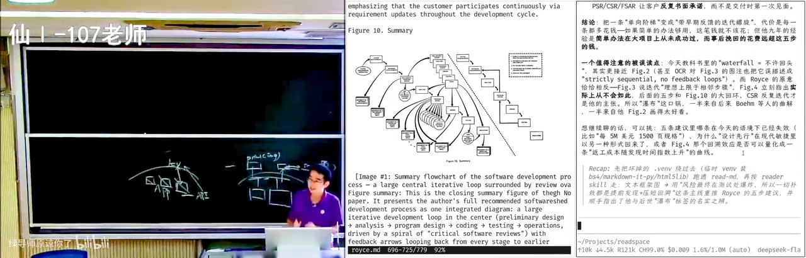
📷 现场让 AI 解释瀑布模型是怎么被误读的
在 B 站中打开 (01:03:07)
比如你可以直接问它："解释一下这个瀑布模型在软件工程里到底是怎么被误读的。"
- 你会产生疑问，然后你就直接跟它对话；
- 它可以在这个过程当中找到更多的原文，甚至找到整个误读的链：这个教材一级一级一级，最后到你手上拿的这个软件工程"灌水教材"上面，是怎么一步一步曲解的。
"哼，这个解释还挺 make sense 的。虽然也许你选择不相信 AI，再去追问，或者用一个更好的模型让它联网。"
AI 还给出了一句总结："瀑布是史上最好用的反派"——每一个新方法都要拿它开刀。"哎，他说得很对，就真的是这样：因为它本身就是错的。 1970 年的原文已经告诉你不能瀑布，1970 年就告诉你要做 MVP。"
26. 用今天的实践回读 Royce：TDD、敏捷与 data dependency
(参考时间: 01:04:55)
"当然我已经带着大家读过这个文章了，所以这几页 AI 生成的也就不那么重要了。文章告诉我们叫 do it twice，一个很重要的工程理解；但今天就是做 MVP。其实你也可以在不同的、各种各样的现在软件开发的背景下去理解它。"
26.1 用 TDD 理解：缺陷发现得越晚，返工代价越大
如果我们用 TDD（test driven development，测试驱动开发） 去理解这篇文章——"它都是互相的：我们今天的概念、今天正确的 practice 可以映射到过去；然后过去正确的 first principle，也可以用来映射到今天。"
Royce 讲了一件事：缺陷被发现的时间越晚，它带来的返工代价就越大。 显然这个事是成立的：
"就跟你们做 OJ 都会出现这个事：你们一开始的时候脑子一热，想一个算法（这个算法是不对的），然后就去写代码；写代码写完以后发现样例不对；然后你对着样例跑了你的那个算法，你发现'哎呀完了，我这个算法整个就错了'。这就是一个典型的瀑布模型的失败。"
而在 TDD 的意义上，你看"设计先行"：那你设计先行的时候，你就干脆先把测试用例定好——输入这个，它就应该经历这个流程，输出这个——然后你马上就对。还有一些敏捷开发等等的概念，就可以用上了。
"所以现在做的事情不完全颠覆过去的经验。"
26.2 为什么经典值得读
很多图灵奖的工作为什么能得图灵奖？就是因为它确实是在一个大家完全不知道的情况下，确立了一个 first principle，告诉大家这件事情应该这么做。
不仅是图灵奖：奠定了软件工程基础的、Royce 的这篇"被我们开玩笑叫做瀑布模型的 paper（其实不是瀑布模型）"——Managing the Development of Large Software Systems——就给我们很多的启发，在它上面长出了这个世界的很多分支。
"当然也有更好玩的：你有一天发现它一开始有个地方方向想错了，然后把全人类都带歪了。如果全人类从某一点开始能够换一个方向，那也许就立即快速走上了正确的道路——比如说直流电和交流电，爱迪生和特斯拉。"
26.3 用敏捷理解：doing it infinite many times
你也可以用敏捷开发去理解 do it twice：
- 你不需要把 pilot 理解成一个完整的流水；
- 所谓敏捷就是：你的第一个版本不是 doing it twice，你是 doing it infinite many times；
- 你上来第一个版本，哪怕它只有一个 hello world、只是打印一个 log，或者说每个模块都自报一下家门、能把这个模块串起来——这也是一个好的 product；
- 然后在这个意义上不断地把软件向后演进：让关键假设尽早遇到证据。你一开始不确定的东西，因为你有一个敏捷的原型了，就可以立即验证它。
"所以你看，这个 first principle 在这么多年软件工程发展的实践当中，都还是存在的。"
26.4 关于 AI 的焦虑：至少今天，能理解 AI 的人能活下来
- AI 确实学会了（写代码）；也许它的品味有一天也学会了——它可以从这些论文里面学到品味。
- 我们很焦虑 AI 能帮我们做事，但现在人类还有一种傲慢：觉得我们还是希望能够理解 AI 到底做了什么、能够判断 AI 到底做得对不对。
- 真的到那一天——AI 做的所有东西都远超人类、都是对的，只有人会犯错误、AI 不会犯错误的时候——那我们就不要去理解它了，可能也放弃理解它。
- 但至少在今天，AI 虽然才智在增长，我们还是至少能驾驭、能理解 AI 的人能活下来。 在斩杀线不断上升的基础上，你就知道我们怎么样用好 AI、怎么样去理解这里面的软件工程的智慧。
26.5 讲者自己的读法：把 Royce 的模型看成 data dependency graph
"那我是怎么理解这个 Royce 的 pilot 模型的呢？因为我是一个 computer science 的人。"
他让 AI 往前翻一点（论文的那一节），然后说：我把 Royce 的模型理解成一种 data dependency，而且修改是有代价的。
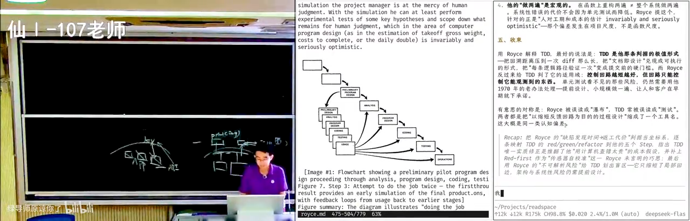
📷 把瀑布模型看成 data dependency graph
在 B 站中打开 (01:09:32)
- 瀑布模型说：从需求分析 → 系统设计 → 系统实现 → 测试验证 → 交付维护。你可以把每一个过程都想象成一个 program——就是把人想象成程序（"人和程序就是等价的：我的人脑就是神经网络"）。
- 而且我可以做 chain of thought：我先学会了语言、学会了说话；你们在内心——我不知道你们是怎么样的，至少我自己在想问题的时候，我还是会对齐到语言上：我哪怕不说话，我依然会说"OK 我要这样，这样会有什么样的后果"——我还是用语言来对齐我脑内的这个思维链的思考。所以 CoT 是一个我觉得很有意思的机制。
- 如果把这些过程和它们产生的 artifact 连起来，那就是一个 data dependency graph，它是一个有向无环图（DAG）。
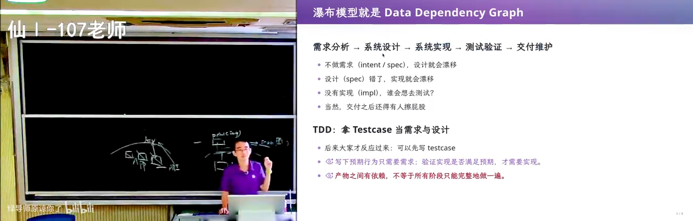
📷 需求点 → 设计 → 实现 → 测试：关联会传递
在 B 站中打开 (01:10:36)
稍微展开一点：
- 我在做需求的时候，需求里面有好几个点，这些点之间可能也有关联，有些可能没有关联；
- 我在做设计的时候，我的设计可能就和这些需求的点是关联的；我做的这个设计，又和下一个设计是关联的；
- 然后这个关联关系会传递。
于是我有了这样的一个 data flow graph，那就意味着：如果这种一头扎下来，一旦发现问题…… 如果一旦发现这个 test 错了，然后我们一路往上追溯，发现这几个 design 错了——那就惨了：所有依赖它的东西全部都毁掉了。
"所以这就解释了为什么 cost 很高。你看，跟 Royce 的解释又是一样的。"
graph TD
R1["需求点 R1"] --> D1["设计 D1"]
R2["需求点 R2"] --> D1
R2 --> D2["设计 D2"]
R3["需求点 R3"] --> D2
D1 --> I1["实现 I1"]
D2 --> I2["实现 I2"]
I1 --> T["测试 T<br/>★ 第一个物理事件"]
I2 --> T
T -.->|"T 失败, 向上追溯"| D1
D1 -.->|"依赖 D1 的全部作废<br/>cost 随发现时间指数上升"| X["返工: 设计 + 实现 + 测试 全部重来"]
每个人对这个模型的理解都可以是不一样的——这也是为什么我们非常需要个性化的教学：每一个人都有自己的 diversity，他成长的经历不同。讲者说，因为他还算是一个做过一点 PL、操作系统的人，所以他会很自然地用他在 computer science 里面习得的概念去解释这个世界。
"这基本就是软件工程后来真正采用的形式化方式，这也是一个 first principle。"
26.6 于是 MVP 就来了：BFS 换成 DFS
那如果我们知道这个 data dependency——一旦修改会触及它上游的东西——我们应该怎么办呢？
"那我们很自然地：哦，我们可以把它割小嘛。MVP 就来了。"
- 我们不要一次性地产生大量的 dependency；
- 而是我们从一个宽度优先（BFS）的方式开始——这是一个用 BFS 的方式构建软件：先做第一层，再做第二层，再做第三层；
- 然后我们变成一个 DFS——这不就是敏捷开发吗？
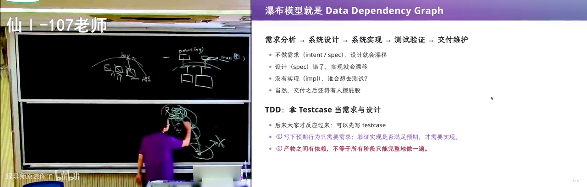
📷 BFS 一次性铺开 vs DFS 敏捷迭代
在 B 站中打开 (01:12:48)
先做一个 minimal viable product，把一些重要的、优先级最高的 dependency 流程走通；走通了以后，再不断地向右扩展——一个 DFS、一个迭代。
"这就对了嘛。这就是软件工程，没有什么真正真正困难的。 我们越早能够得到反馈，我们就越能把这个路线上面的不确定性（这个 gap）消掉。"
graph LR
subgraph B["瀑布: BFS 一次性铺开所有层"]
B1["全部需求"] --> B2["全部设计"] --> B3["全部实现"] --> B4["最后才测试<br/>风险集中爆炸"]
end
subgraph A["敏捷: DFS + MVP"]
A1["MVP: 走通优先级最高的<br/>一条 dependency"] --> A2["向右扩展一层"] --> A3["再扩展一层"] --> A4["每一步都拿到反馈<br/>关键假设尽早遇到证据"]
A4 -.->|迭代| A2
end
26.7 瀑布模型里其实是有 insight 的
因为每一个阶段——瀑布模型里面其实是有 insight 的：
| 阶段 | 对应要确定的东西 |
|---|---|
| 需求阶段 | 把 intent 确定 |
| 设计阶段 | 把 spec 基本上确定（当然 spec 在需求阶段也会稍微做一点） |
| 编码、测试 | 才是 implementation |
然后因为我们知道这个东西是有 gap 的，而这个 gap 就意味着每一个 intent 都会拆成好多个小点，而且会对后面产生 dependency——所以我们应该做 MVP、应该做敏捷开发、应该做 TDD。它显然是一个正确的事情。
"所以我觉得阅读这些经典的著作，真的是非常有启发性的，也是一个非常值得大家学习的学习方式。因为一般经典来说，经典都记录了一个领域最初遇到的、也是最重要的那个根本性的问题，然后在方向上找到一个出路。尽管我在事后也可以援引其他的概念，比它解决得更好——比如我就很喜欢 data dependency：在整个软件工程的发展历史上，你都可以往这个方向去思考，然后导出更多的概念。"
27. 软件工程变成了什么：为每个阶段创建方法与工具
(参考时间: 01:15:30)
那么这是软件工程的（起点）——相当于我觉得这个有点像起点了：你学软件工程的 first principle 是"软件到底是什么"。你当然可以用定义说它是代码和数据，但当你从这个视角看的时候，你就能继续往后推出更多的东西。
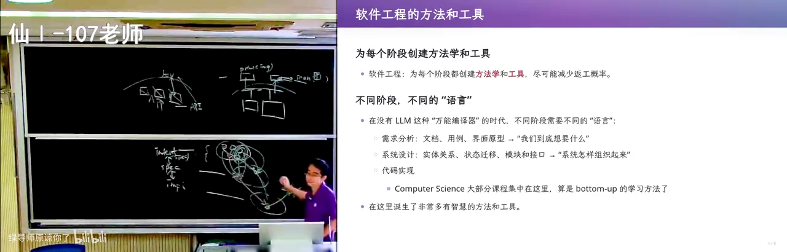
📷 经历几十年发展，软件工程变成了什么
在 B 站中打开 (01:15:36)
那么在现在、经历了几十年的发展，软件工程变成什么呢？
为了解决这里的问题，它为每一个阶段都创建了方法和工具；然而这些方法和工具，可以减少你返工的概率。
27.1 checklist：一个"有人文关怀"的工具
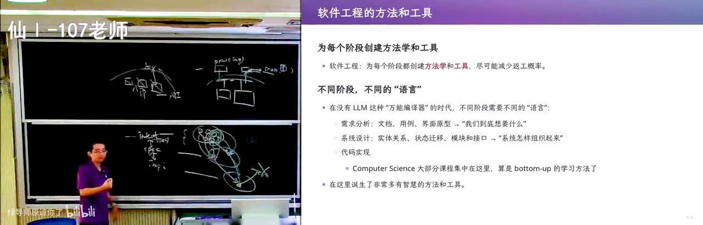
📷 设计阶段的 checklist（有 ISO 标准）
在 B 站中打开 (01:16:00)
（讲者问了下有没有软件学院的同学：你们学软工课的时候，在设计阶段它应该是有 ISO 标准的——"但我对这个印象已经不深了，因为我不是做这方面软件工程的。"）
- 比如这里有一个 checklist：你上软件工程课的时候，老师让你写一个文档，然后它大概有一个非常长的 checklist——这个有没有做到、那个有没有做到、有没有沟通过；
- 然后你就觉得 nonsense，因为你是做 OJ 题的；
- 但 checklist 实际上是有用的：它减少了你返工的概率。 比如这个 checklist 最后总有一个"你是不是和客户最后沟通过"。你在上学的时候会觉得"诶，这个很讨厌啊"，但是当你真的和客户沟通过、并且给它打勾的时候，实际上你大幅减少了 intent 不符合客户要求的概率。
"这就是一个方法，这也是一种工具——一个有人文关怀的工具，它没有任何的代码。"
27.2 有了代码以后：自动测试与 bad smell
当然我们现在做软件工程研究的时候，更多时候是说"当我们有了代码以后"：
- 有了代码以后，能不能做自动的测试？（"无穷多的这个灌水的 paper"）
- 有了代码以后，里面有没有 bad smell？bad smell 你们都知道：比如你如果看到一个代码，它在等号左右从来不写空格，你会认为这个代码是不好的代码。
"这个规定在 AI 时代之前都成立。但是我发现这个在 GPT-6 学会省 token 以后，这件事情变了：它会写出极为无法理解的代码，把很多的语句放到一行里，然后那个代码就是对的。我不知道它是怎么弄对的，但是反正它是对的。也许我们永远不应该去读那样的代码——这是个有意思的观察。"
27.3 深度与广度：读研究生的时候别忘了看树林
但至少我们知道的是：软件工程有了这样的一个起点，为了把这个大的、系统性的工程扶起来，里面还有很多很多细小的点。
- 你们如果去读研究生、如果要选软件工程方向，你们大概率会在里面非常小的一点上做研究——比如"针对软件开发流程当中编码这个过程当中、Java 代码的这一种类型的 bad smell 的更好的检测"，去做一个什么东西；
- 当然你在做深的过程中，不要忘记去看这个树林、去看这些经典的东西，你就会有更好的认知。
"对人来说，深度和广度都是：你要在深度里面训练，你才有更长的思维链；你在广度里面训练，才有更好的对整个世界的感觉。"
28. 语言的阶梯：从 checklist 到 DSL 再到编程语言
(参考时间: 01:18:44)
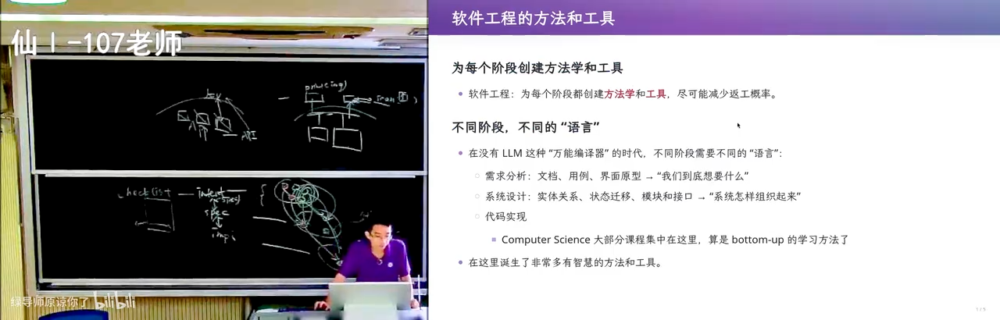
📷 不同阶段需要不同的语言
在 B 站中打开 (01:18:51)
还有意思的是你会发现：所谓软件工程，为了在每一个阶段创建方法学和工具，它就需要在不同的阶段用不同的语言。
- 比如在 checklist 的时候——尤其是在大语言模型时代之前——你是不太可能用一个编程语言去做一个 checklist 的（虽然今天我们都用 Markdown）。那个时候真的就是一个 docx 的文档，然后你把这个文档打印出来、要存档；可能是手写的、跟客户沟通的那个记录。
- 然后你到编程的时候，又有编程语言。
- 在编程语言和之前，你马上就看到了一个 gap：那个时候没有大语言模型这种"万能的编译器"——只要有自然语言，就可以把它编译成任何一种语言。
在不同阶段你会发现：比如在设计阶段，我们没有一个语言来帮助你做设计。再比如说在 1970 年的时候，在设计的时候，大家用的都是自然语言，就是一个设计文档。
"你们学软件工程——我记得我那个时候学软件工程就是写设计文档：先写需求文档，需求文档写完写设计文档，follow 那个瀑布的模型。"
28.1 文档的最大缺点：人会幻觉，人对不齐
你马上就会想：文档的最大缺点是什么？
- 最大缺点是：写文档的是人，人会产生幻觉，人会产生 typo；
- 人和人之间，当我们讲同一件事的时候，是无法对齐的。 这件事情在你和室友之间已经发生过无数次了：你说的是这个，室友理解成了那个，你花了很多的时间跟他沟通和对齐。（"当然我觉得跟女朋友对齐会比跟室友对齐更困难，这个不重要。"）
28.2 于是需要一种"介于自然语言和编程语言之间"的设计语言
你作为一个软工人，在 first principle 上如果你想要应用这句话——"为设计阶段创建一个方法学、创建工具，去减少返工的概率"——那你要做的是什么呢？
你要做的是一个介于自然语言和编程语言之间的一个设计语言——当然也是一个 domain-specific language（DSL）。
哎，你们想到什么了？你们想到了软件工程课上面讲的各种各样的东西。
checklist 虽然它是自然语言，但实际上它也是一种中间语言：
- 因为它有格式的规范：它要求你必须是一条一条的，每一条必须要打勾或者打叉；
- 它已经是介于自然和形式化之间的——它是有一定的语义的；
- 这个语义虽然是由人来检查的，但人对"勾"和"叉"的对齐，就比我直接写一个文档的对齐要来得更 formal 一点。
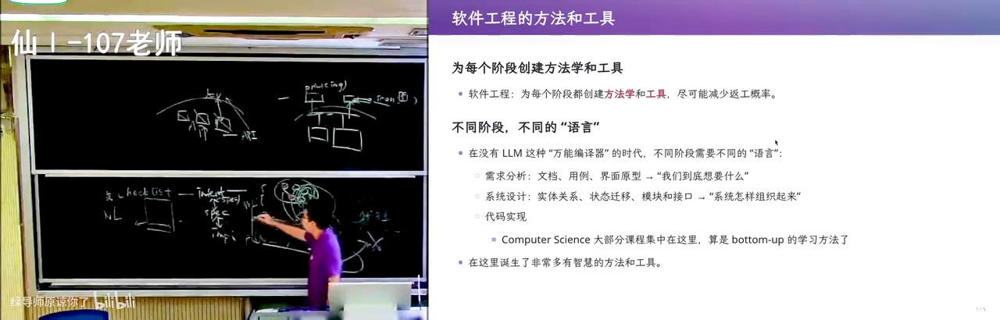
📷 formal 程度：从设计阶段往下越来越 formal
在 B 站中打开 (01:21:30)
"所以你看它这个 formal 的程度——就是它有确定性语义的程度——是从设计的阶段到下面越来越 formal 的。这也迎合了从 intent 到 spec 到 implementation 之间这个 gap 的解决。所以你就开始理解软件工程这个学科了。"
graph LR
N["自然语言<br/>需求文档 / 客户沟通记录<br/>(人会幻觉, 人对不齐)"] --> C["checklist / 决策表<br/>半形式: 一条一条, 打勾打叉"]
C --> U["设计语言 / DSL / UML<br/>类图 · 时序图: 语义确定"]
U --> P["编程语言<br/>+ assert / 契约 (require · ensure)"]
P --> F["形式化证明<br/>编译即证明"]
N -.->|"确定性语义越来越多<br/>gap 越来越小"| F
29. 学习顺序：bottom-up 还是 product-first
(参考时间: 01:21:46)
那我们（过去）学的时候是怎么学的呢？我们是 bottom-up 的：我们是先学编程。
- 因为你所有的——你看计算机软件（培养方案）——第一件事是先学（编程）：先学怎么做一个码农；
- 因为你不理解代码，你就没有办法理解整个过程。
但是 AI 来了以后，我觉得变了：你可以先从产品经理开始做。
（这里有一个真实的课堂插曲：讲者突然"脑子卡壳"，想不起"产品"对应的英文，还问了一句"产品是这个产吗"，最后想起来是 product——"短路了，我上年纪了。"）
如果让他来改（培养方案）：
- 第一个学期就可以做 product：因为反正你后面所有的事情都是 vibe（code），你不去控制它的质量，你也不需要知道；
- 如果我上第一门课，我不（要求）你控制这个质量——因为你根本就不理解代码、不理解后面是怎么运作的；
- 但你依然可以设计好的产品，你只要有好的想法就可以做。
30. 质量保障的谱系：QuickCheck、traceability 与"2500 个码农"
(参考时间: 01:23:15)
然后在这个过程当中，其实诞生了很多的有软件工程智慧的方法和工具。
30.1 checklist 与决策表：nonsense 被赋予了语义
- 比如说这个 checklist；然后它不仅有 checklist，还有一些像这种决策表（那种决策树）。
- "就很好玩：大家觉得我是个理科生，我在软件学院学文科——他给我一个 checklist，说只有当所有的这个勾都打上了，你才能进入下一个阶段。这对我来说是 nonsense。但是这个 nonsense 被赋予了对吧：这个形式的语义避免了遗漏和矛盾。"
- 它甚至会要求你把所有的文档两两摆在一起审查一遍。你会想"我靠，我才不想做这个事儿，我是写程序的"——但就是这样两两摆在一起检查一遍，避免了这个 gap 的漂移。这都是智慧。（"但是他失败过了。"）
- 然后在管理团队的过程中形成的管理学的经验，软工人也可以学。
30.2 QuickCheck：让人描述性质，由工具生成输入
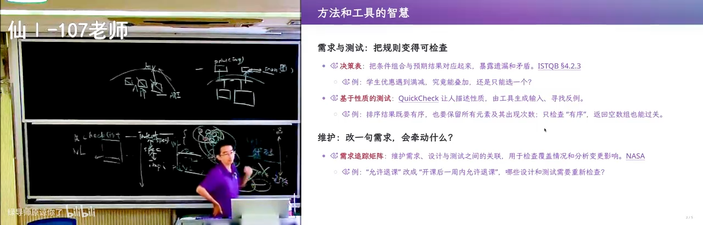
📷 QuickCheck：property-based testing 的开山鼻祖之一
在 B 站中打开 (01:24:15)
还有各种——比如在测试上面也有很多经典的工作，比如说 QuickCheck，基本上可算是我们整个测试领域的开山鼻祖之一：
让人描述性质（property），由工具生成输入，寻找反例。
这体现了一个什么逻辑呢？你做任何事都会错。 你写代码——你做任何从上到下的翻译都会错：你从 specification 翻译到代码。尤其你有些隐含的 specification：
- 比如说你的这个程序不能 crash；
- 不要有 null pointer；
- 资源不能泄露。
这些隐藏在你代码里面的 specification，你也要遵守。
"那你有没有可能：我在代码里面就写一个 property，然后这个 property 可以自动变成好多的测试用例；如果全部都通过了，我对代码就有更大的信心？"
你现在做的软件就是这样的：你写一份代码，你永远不知道它对不对；但是如果你做了测试、你观察过它的结果，你对它的信心就会多一点。当你独立做的质量保障做得越多，你对它的信心越大——除非是你最终写了一个形式化的证明，那你的信心可能是更大的。
30.3 traceability：把 data dependency graph 显式地建出来
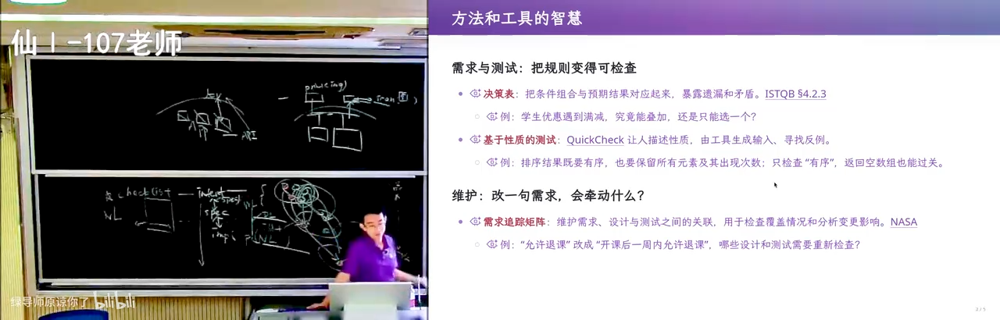
📷 需求追踪矩阵（traceability matrix）
在 B 站中打开 (01:25:29)
然后再比如说这个需求追踪矩阵。前面课上讲过一个概念叫 traceability，这是软件里面很重要的一个概念。
traceability 做的是什么呢？就是把那个 data dependency graph 里面的（关联显式化）——以前是没有的。
如果你从文件系统或者项目的角度来看这个软件，那这个软件就是好多的文件：
/docs下的什么什么.md；src下的一个什么什么.ts；- 然后又有一些其他的东西，还有个
README。
"我说这是一个因为文件系统一开始大家用了、而不得不做的一个 workaround。" 而这个东西其实承载了整个软件。
而 traceability 要求你用链接、或者用什么文档、或者用什么样的方式，要求你的：
- 每一个代码和每一个需求点都能对得上；
- 需求和需求之间也能对得上；
- 需求和设计之间也能对得上。
如果所有这些都能对得上，它有这种独立的、互相的交叉检验，你对软件的质量就更有信心了。
30.4 它也是没办法：人的能力是有限的
它也是没办法——人的能力是有限的。它假设：
- 我们每一个人上大学学软件工程的时候，总是觉得"我要把自己变成世界上最厉害的码农，那就够了；如果我是世界上最厉害的码农，那我就保证能在软件企业里面找到一个很好的工作"——这是这个社会给你的 contract；
- 但是从资本家的角度来看，或者说从"你要完成一项任务"的角度来看，他更重要看到的是：没有一个码农能够单独完成他的项目。 他只能说"我码农有好有坏，我得花多少钱、雇多少码农，最终能把我的项目给交付"。
30.5 所以每个人都当产品经理：你手上有 2500 个码农
所以你看，现在每一个人都当产品经理：你第一门课就要学做产品。
- 你要调动——假设你有好多码农了，而且你现在马上就有：DeepSeek 绝对算是一个相当资深的码农了，绝对不是这种本科毕业生级别的；
- 那你马上就可以有 2500 个并发的"低薪码农"：你手上有 2500 人，你怎么管？
- 你高中毕业的时候，做梦都没有想过：你刚刚高考完、接受了高考的这个训练以后，你马上就能管 2500 个人。
"这个 mindset 可能要改一改。"
31. Design by contract：Eiffel 与"编译即证明"的预言
(参考时间: 01:28:11)
所以在这个里面，就诞生过很多很多好玩的东西。比如说 design by contract（面向契约的编程）。
31.1 Eiffel（约 1986）：把 Hoare 三元组写进代码
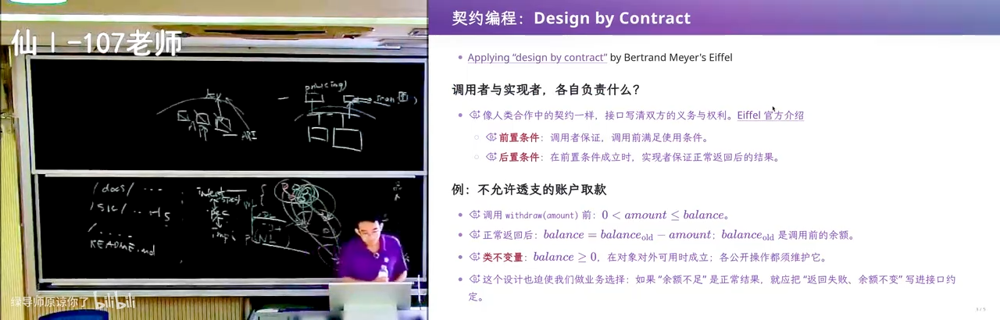
📷 Eiffel：把 Hoare 三元组直接写到代码里
在 B 站中打开 (01:28:26)
这里有一篇文章，讲者就不打开看了：Eiffel 这个语言，应该是 1986 年左右——他说"我要把这个 Hoare 三元组直接写到代码里"。你看这样一段上古语法就知道了：它叫 feature / function，然后它那个赋值还有 :=（冒号等于）。当然这一路也沿袭下来，有很多语言也采用了这条线。
withdraw (amount: INTEGER) is
-- 从账户中取款：先写文档，说明这个函数是干嘛的
require -- 前置条件 (pre-condition)
amount > 0
balance >= amount -- 余额不足到底应该怎么处理?
do -- 代码的实现 (先别急着写这一段)
balance := balance - amount
ensure -- 后置条件 (post-condition)
balance = old balance - amount
end
require：它的前置条件；do：这是代码的实现；ensure：做完了以后，它能够保证什么。
他鼓励你先不要写 do（实现体），而是先把软件的各个模块文档、pre-condition、post-condition 给写出来。
比如你有一个账户的取款：当你在写这个 precondition / postcondition 的时候，你就会自然地去关联到你的设计——比如说"余额不足到底应该怎么样处理"。
"你在写第一个 MVP 的时候，你一定不会管这些事：你肯定是直接让它 crash，或者假设这件事情永远不会发生，排除在你的 specification space 之外。但是当你的软件不断地向后演进的时候，那么 OK，你的这个 contract 就变得非常重要。所以他希望能够在这个编程语言里引入这个。"
31.2 这么多年软工人做的事，就是在 spec 上面横跳
所以你看到这么多年软工人做的事情，就是在这个 spec 上面横跳：
- 从自然语言；
- 到几个半自然的语言——可以接纳设计的、有一些逻辑公式的语言：它可以没有代码，单纯地检验这个逻辑（比如说函数调用这个逻辑能不能成立）；
- 再到现在的这个编程语言。
今天其实依然是一个非常活跃的方向。
31.3 LLM 来了：剩下的只有 gap
而且我觉得软件工程未来会发生很大的变化，因为 LLM 来了：
- 自然语言对不齐的问题解决了；
- checklist 不好检查的问题也解决了；
- 我们只剩下这个 gap：只有"是我没有想清楚、我没有说清楚"。一旦我想清楚、说清楚，可能真的就都能解决了。
因为你看像 Eiffel，它催生了很多现在的项目，比如 Dafny、Verus 这些形式化验证的工具。
📷 Dafny / Verus：形式化验证工具
在 B 站中打开 (01:30:45)
"大家的梦想都是：我如果写一个这样的程序，我可以自动地证明我的函数在前置条件满足的时候，后置条件就会满足——无论我写什么就能证明。而且我还要证明整个系统：把所有的前置条件、后置条件连起来，它就能够满足我的 intent。"
31.4 讲者的"30 年预言"，可能只需要 10 到 15 年
其实在 ChatGPT 出来之前，讲者上操作系统课的时候就预言 30 年（说 30 年以后，那可能 2020 年左右、还是 2022 年左右的时候）：
- 如果你的一个程序里面有个 assert——随便你写的 assert 也可以：这种前置条件、后置条件可以写成断言；
- 比如说"我的函数要满足：这个 linked list 往左走再往右走（或者往后走再往前走），总之能回到自己"，就写一个（断言）；
- 然后任何和业务逻辑相关的 assert，只要我写出来它不能证明——或者说这个东西是无法证明的——这个程序就不能编译；
- 编译百分之百保证这个东西才能证明。
"那我就……这个软件的 gap、代码开发的这种（问题）：我还需要这种 property-based test 吗？我不需要。我只要直接把这个 property 写进去，它帮我证明了就可以了。 然后从现在来看，可能不需要 30 年：可能从那个时间点算，10 年或者 15 年就可以解决这样的问题了。"
32. UML：对齐语义的野心，与它为什么"死了"
(参考时间: 01:32:29)
然后在这个过程当中，有一个集大成者叫 UML——大家绕不过去的一个名字：Unified Modeling Language（统一建模语言）。
📷 UML：统一整个面向对象世界的中间语言
在 B 站中打开 (01:32:30)
它的想法也很简单：既然这个世界这么复杂，在不同的层次上要用不同的语言——
- 你实现的时候是 C 或者 Java（实现的时候也可以用 Eiffel，也有一些别的专门用来做设计的领域语言）；
- 你在做需求的时候是自然语言；
- 那我们能不能有一种中间语言，统一整个面向对象的世界？
32.1 它要做的是"语义的对齐"，而这恰恰是人类天生做不好的
它要做的是一个非常有野心的事情：语义的对齐。而这件事情，人类其实天生没有做好——因为人类靠自然语言，而自然语言是直接连接大脑的 latent space 的。
"当我跟你说'我今天看到一个美女'，在每一个人的 latent space 里面都构造了一个美女，但她都不一样——这是对不齐的。如果你要求我们把那个形象 3D 建模、用 Blender 画出来，这就跟让 GPT 画一个美女、让 DeepSeek 画一个美女一样，他们画出来也是不一样的。（开玩笑——不过好像豆包生成的都长一样。）"
所以语言就是很难对齐的，因为语言直连人类大脑的 latent space。于是人类发明了数学语言：
- 数学语言是一个非常好的、全人类都能自然对齐的（语言）：因为我们知道什么是自然数，我们是从公理一点一点构造出来的，而那个公理非常小，以至于人类基本上还是可以对齐的；
- 一旦对齐完成，那我们用皮亚诺（Peano）的公理，就把整个计算机世界全部都构建起来了；那在计算机世界里看到同样的东西，它的语义就是绝对对齐的。
32.2 UML 的办法：把能对齐的和不能对齐的剥离出来
UML 想要的是一个非常有野心的目标：它想要去对齐那个自然语言世界里面的东西——比如说需求、设计这些"说不清"的东西。
- 当然你是不可能百分之百对齐的；
- 但它希望把能对齐的部分和不能对齐的部分给剥离出来，通过定义模型的元素和它们的语义。
就有些东西是有语义的。比如你们可能学过 UML 的类图：
- 类图的语义就是确定的：我有个 class 叫
student，student里面有一个 field 叫name，那它就是student.name——它可以变成源代码里面的一个东西，它是有语义的； - 再比如说 sequence diagram（时序图）：它说我要从前到后按照某一个顺序、时序来执行，那这个时序的先后就是绝对对齐的，你不需要用自然语言。如果没有 UML，你写自然语言"先后"，那么当它发生并发的时候，到底谁先谁后、能不能并发，它就是有歧义的；
- 但是 UML 最大程度地减少了在没有代码时候的这种语义的漂移。
32.3 但今天，UML 已经死了
"当然我觉得今天 UML 已经死了。这是因为：它所有的假设都是'我们的自然语言和形式语言是不能对齐的'——这是它的假设，所以它需要一层一层的中间语言。而今天突然间，这个自然语言可以和任何东西对齐的——反正 AI 就可以给你问嘛。所以 UML 也是一个历史里面的东西了。 但是它设计时候的这个 first principles，其实一直都在指导我们。"
33. 用 AI 备课：796 页 UML spec 与教育平权的算力问题
(参考时间: 01:36:02)
讲者也特意重温，让 AI 帮他重读了一下这个（UML 规范）：
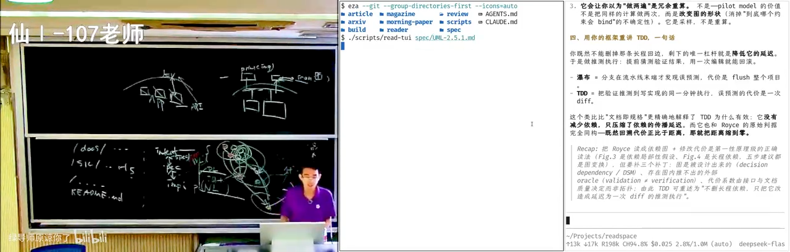
📷 一个 700 多页的 UML spec 文档
在 B 站中打开 (01:36:14)
"这个就比较恐怖了：一个 700 页的文档。 你看到我的工具还是可以的——我特别做了这个可以 scale 长文档（几千页的文档也没有问题）；这个就跟 PDF 是差不多的，还是有接近的体验的。"
正好这个 Kimi——"这可能算一个广告：因为他送了我一个 699（元）的一个月的套餐，说看到了我的视频"——然后他就直接让 AI 帮他读了整个 UML spec（就是刚才你看到的这个 dump）。
33.1 分 subagent、带 overlap 地切片，每个读 50 页
dump 完了以后，他直接让 AI 帮他备课：
- 大概让 AI 这样：分 subagent，按切片，每个 agent 读 50 页；
- 把一个非常长的文档切成这样的片、带 overlap（因为总会有一点重叠）；
- 然后让每一个（agent）都提取里面的软件工程智慧，把不符合 AI 时代的、不必要的东西（去掉）；
- 把他的 lecture notes 全部给它，然后把它拿出来、总结成课件。
"结果我把一个非常长的文档（读完了）。所以我觉得这是一个非常恐怖的、也是一个蛮可怕的事情。"
成本：它花了 18% 的五小时额度，大概折算成这个 699 套餐的五块三（元）。
33.2 于是这是一个值得思考的问题：我们还学得起吗
- 当你拥有了更好的模型——比如你现在如果用 GPT-6，可能你的价格会差不多，因为它很省 token（GPT-6 的 token 真的非常省）——可以在差不多的价格下得到好得多的质量；
- 这就意味着：哪怕你们是学生群体，在拥有好的模型和没有好的模型的时候，你们的学习效率、学习成本也会有很大的差距。
还好现在 token 可能也不算太贵：
- 如果你有一个 100 刀的 Codex，其实我觉得对大家学习来说还算够用了；
- 因为什么东西烧 token 呢？你去维护大项目：大项目你就会在大上下文里载入很多东西，然后你 100 万上下文马上就填满了，那个很费（额度）；
- 但如果你是一个学习流程的话，你其实不会像我这样把整个 UML spec 都放进来，你可以用这个 digested version。
"但这个值得我们思考的是：我们以后还学得起、学不起来？ 这真的是一个非常现实的问题。因为如果让所有人都教育平权，那我们没有那么多算力、没有那么多资源，那怎么办？We don't know——这可能是一个社会性的问题。"
34. 结语：哪些 intention 必须定死，哪些留白
(参考时间: 01:39:19)
这是 UML 它总结的一些东西。但一句话：
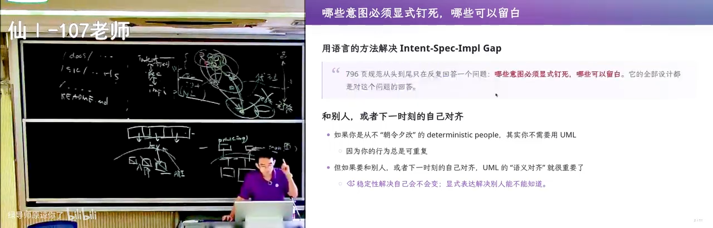
📷 796 页的 spec，从头到尾回答一个问题
在 B 站中打开 (01:39:23)
796 页的 spec，从头到尾回答一个问题：哪些 intention 必须定死，哪些留白。
它构造了一个形式语言（半形式的语言）去告诉你：哪些东西可以在语义上确定下来，哪些可以不用它解决。
就是对齐的问题：人和人之间——你甚至和下一时刻的自己（你不 deterministic：你今天想的和明天想的就不一样，所以你跟你自己都对不齐）——那有趣的东西，大家可以自己回去看一下这个 slides。
好，那今天下课。
后记 Postscript：本书是如何生成的
本书由 B 站 AI 字幕（ai-zh，覆盖率 100%、2583 段、时长 99 分 59 秒）经 AI 重构而成：口语转书面语、按内容逻辑分 34 章（另加本篇后记）、绘制 6 张 Mermaid 图、插入 56 个截图锚点；截帧管线在已登录的专用 Chrome 配置里逐个 seek 到锚点时间、隐藏播放器 UI、锁定顶码率流后截取纯视频帧；最终渲染为带截图放大（lightbox）与 Mermaid 交互的 HTML。
与视频逐句对照的订正稿见 transcript.corrected.txt：先由脚本按本讲错词 MAP 修正（如 type c AI→TypeSafe AI、JEFF/JB→Jev、chal salt/CHAMPSHO/CHAS→chain of thought、GP6→GPT-6、大圆模型/大于原模型→大语言模型、基摩场/机膜厂/禁摩场→基模厂、达舍尔/DEXTRA→Dijkstra、I trio e→IEEE、IFL/埃菲尔→Eiffel、pick check→QuickCheck、rose/pom/ROIS→Royce、train lecture→Turing Lecture、NATTO→NATO、恋爱来了→LLM 来了、反攻→返工、羽翼→语义、latin space→latent space、流感→留白、button map→bottom-up、干水教材→灌水教材、AI slap/AI s lop→AI slop、web coding→vibe coding、deep pick/deep sk flash→DeepSeek、cloud open4.6→Claude Opus 4.6 等），再由 AI 通读全文做一轮行级订正（保留讲师原始字词与有意重复，仅修明显识别错误）。